import datetime
import numpy as np
import pandas as pd
import pandas_datareader as pdr
import statsmodels.tsa.stattools as stt
import statsmodels.api as sm
import statsmodels.formula.api as smf
from statsmodels.iolib.summary2 import summary_col
from statsmodels.tsa.arima.model import ARIMA
import scipy as sp
import matplotlib.pyplot as plt
#plt.style.use('ggplot')
plt.style.use('seaborn-v0_8-darkgrid')
import matplotlib.colors as mcolors
np.random.seed(13)
from warnings import simplefilter
simplefilter(action="ignore")24 Introduction to Time Series Regression and Forecasting
24.1 Introduction
In this chapter, we cover the basic concepts of univariate time series methods. We first show how the time series data can be handled in Python using the pandas and pandas_datareader libraries. We then cover basic terminology and concepts, such as lags, leads, differences, growth rates, and annualized growth rates. We define autocorrelation, strict and weak stationarity. We introduce two univariate time series models: the autoregressive (AR) model, and the autoregressive distributed lag (ARDL) model. We specify assumptions under which we can use the OLS estimator for the estimation of these models. We explain how nonstationarity can arise from deterministic and stochastic trends, as well as from structural breaks. We close this chapter with introducing autoregressive moving average (ARMA) models.
Time series data refer to data collected on a single entity at multiple points in time. Some examples are: (i) aggregate consumption and GDP for a country, (ii) annual cigarette consumption per capita in Florida, and (iii) the daily Euro/Dollar exchange rate. In Definition 24.1, we provide a formal definition of time series data.
Definition 24.1 (Time series data) Let \(Y\) denote the time series of interest. The sample data on \(Y\) consist of the realizations of the following process: \[ \{Y_t:\Omega \mapsto \mathbb{R}, t=1,2,\dots\}, \tag{24.1}\]
where \(\Omega\) is some underlying suitable probability space.
According to this definition, \(Y_t\) is the \(t\)-th coordinate of the random variable \(Y\). Thus, a sample of \(T\) observations on \(Y\) is simply the collection \(\{Y_1, Y_2,\dots,Y_T\}\).
From here on, we will consider only consecutive, evenly-spaced observations (for example, quarterly observations from 1962 to 2004, with no missing quarters). Missing and unevenly spaced data introduce complications, which we will not consider in this chapter.
In economics, time series data are often used for (i) forecasting, (ii) estimating dynamic causal effects, and (iii) modeling risk. In forecasting exercises, we place greater emphasis on the model’s goodness-of-fit; however, avoiding overfitting is crucial for generating reliable out-of-sample forecasts. In these exercises, omitted variable bias is not a major concern, as interpreting coefficients is not the primary focus. Instead, external validity is essential because we want the model estimated using historical data to remain applicable in the near future.
24.2 Time series data types in Python
We use pandas and pandas_datareader libraries to work with time series data. We use DataFrame objects in pandas with a time index to store time series data. The data_range function in pandas can be used to generate the time index. Its syntax is as follows:
pd.date_range(start=None, end=None, periods=None, freq= None)where
startandendare the first and last dates in the time index. They can be specified in several formats,start = '1990-05',start = '1990-05-13',end = '02/05/2020','2/5/2020', etc.periodsis the number of observations that are equispaced from the initial to the last, andfreqis the frequency of the observations. It can be'Y'(annual),'QS'(quarterly, quarter start frequency),'QE'(quarterly, quarter end frequency),'M'(monthly),'D'(daily), etc.
As an example, we consider the U.S. quarterly real GDP growth rate over 1960:Q1 to 2017:Q4 from the GrowthRate.csv file. This file contains data on the following variables:
Y: Logarithm of real GDPYGROWTH: Annual real GDP growth rateRECESSION: Recession indicator (1 if recession, 0 otherwise)
We use the read_excel function in pandas to read the data and then use the date_range function to set the time index.
# Load the GDP growth rate data
dfGrowth = pd.read_excel('data/GrowthRate.xlsx', header = 0)
dfGrowth.columns
# Set the index to the date range
dfGrowth.index = pd.date_range(start = '1960', periods=len(dfGrowth), freq = 'QS')
dfGrowth.indexDatetimeIndex(['1960-01-01', '1960-04-01', '1960-07-01', '1960-10-01',
'1961-01-01', '1961-04-01', '1961-07-01', '1961-10-01',
'1962-01-01', '1962-04-01',
...
'2015-07-01', '2015-10-01', '2016-01-01', '2016-04-01',
'2016-07-01', '2016-10-01', '2017-01-01', '2017-04-01',
'2017-07-01', '2017-10-01'],
dtype='datetime64[ns]', length=232, freq='QS-JAN')Figure 24.1 shows the time series plot of real GDP and its annual growth rate from 1960 to 2017. The shaded areas in the figure represent recession periods, during which the real GDP growth rate is negative.
# Plot of log GDP and growth rate of GDP
# Create a figure and a set of subplots
fig, axes = plt.subplots(2, 1, figsize=(6, 6))
# Plot log GDP
axes[0].plot(dfGrowth.index, dfGrowth['Y'], linestyle='-', color='steelblue')
axes[0].fill_between(dfGrowth.index, dfGrowth['Y'].min(), dfGrowth['Y'].max(), where=dfGrowth['RECESSION'] == 1, color='steelblue', alpha=0.3)
axes[0].set_title('The real GDP of the U.S.', fontsize=12)
axes[0].set_xlabel('Date', fontsize=10)
axes[0].set_ylabel('Logarithm', fontsize=10)
# Plot of GDP growth rate
axes[1].plot(dfGrowth.index, dfGrowth['YGROWTH'], linestyle='-', color='steelblue')
axes[1].fill_between(dfGrowth.index, dfGrowth['YGROWTH'].min(), dfGrowth['YGROWTH'].max(), where=dfGrowth['RECESSION'] == 1, color='steelblue', alpha=0.3)
axes[1].set_title('The annual growth rate of the U.S. real GDP', fontsize=12)
axes[1].set_xlabel('Date', fontsize=10)
axes[1].set_ylabel('Annual growth rate', fontsize=10)
plt.tight_layout()
plt.show()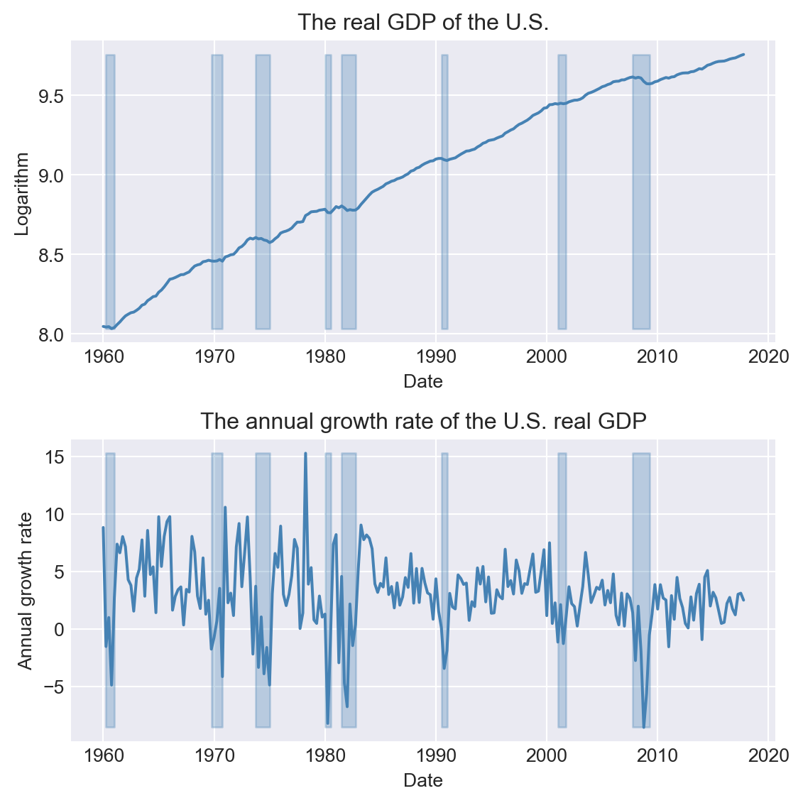
As another example, we consider the quarterly macro economic data on the U.S. contained in the us_macro_quarterly.xlsx file. This file includes quarterly data on several macroeconomic variables from 1957:Q1 to 2013:Q4. The data set contains the following variables:
GDPC96: Real GDPJAPAN_IP: Production of Total Industry in Japan (FRED: JPNPROINDQISMEI)PCECTPI: Personal Consumption Expenditures (Chain-type Price Index)GS10: 10-Year Treasury Constant Maturity Rate (quarterly average of monthly values)GS1: 1-Year Treasury Constant Maturity Rate (quarterly average of monthly values)TB3MS: 3-Month Treasury Bill (Secondary Market Rate, quarterly average of monthly values)UNRATE: Civilian Unemployment Rate (quarterly average of monthly values)EXUSUK: U.S./U.K. Foreign Exchange Rate (quarterly average of daily values)CPIAUCSL: Consumer Price Index for All Urban Consumers: (all items, quarterly average of monthly values)
We use the read_excel function in pandas to read the data set and then use the date_range function to set the time index.
# Load the macroeconomic data set
dfMacro = pd.read_excel('data/us_macro_quarterly.xlsx', header = 0)
dfMacro.columns
# Set the index to the date range
dfMacro.index = pd.date_range(start='1957-01-01', periods=len(dfMacro), freq='QS')
dfMacro.indexDatetimeIndex(['1957-01-01', '1957-04-01', '1957-07-01', '1957-10-01',
'1958-01-01', '1958-04-01', '1958-07-01', '1958-10-01',
'1959-01-01', '1959-04-01',
...
'2011-07-01', '2011-10-01', '2012-01-01', '2012-04-01',
'2012-07-01', '2012-10-01', '2013-01-01', '2013-04-01',
'2013-07-01', '2013-10-01'],
dtype='datetime64[ns]', length=228, freq='QS-JAN')In Figure Figure 24.2, we plot the U.S. unemployment rate, the U.S. dollar/British pound exchange rate, quarterly U.S. real GDP, and the logarithm of Japan’s industrial production index over the period 1960–2013. The figure shows that U.S. real GDP and Japan’s industrial production index exhibit upward trends, while the unemployment rate and the dollar/pound exchange rate fluctuate widely over time.
# Time series plots of four economic variables
# Taking a subset
newdata = dfMacro.loc['1960-01-01':'2013-12-31']
# Plot the U.S. unemployment rate
plt.figure(figsize=(4, 4))
plt.plot(newdata.index, newdata["UNRATE"], color="steelblue", linewidth=1)
plt.ylabel("Percent")
plt.xlabel("Date")
plt.show()
# Plot the U.S. dollar / British pound exchange rate
plt.figure(figsize=(4, 4))
plt.plot(newdata.index, newdata["EXUSUK"], color="steelblue", linewidth=1)
plt.ylabel("Dollar per Pound")
plt.xlabel("Date")
plt.show()
# Plot the U.S. quarterly real GDP
plt.figure(figsize=(4, 4))
plt.plot(newdata.index, newdata["GDPC96"], color="steelblue", linewidth=1)
plt.ylabel("Real GDP (Billion $)")
plt.xlabel("Date")
plt.show()
# Plot the Japanese industrial production index
plt.figure(figsize=(4, 4))
plt.plot(newdata.index, np.log(newdata["JAPAN_IP"]), color="steelblue", linewidth=1)
plt.ylabel("Production (Index)")
plt.xlabel("Date")
plt.show()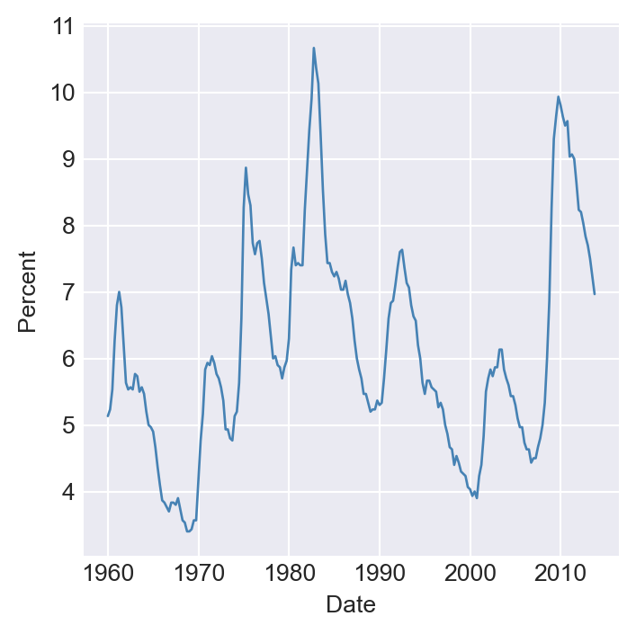
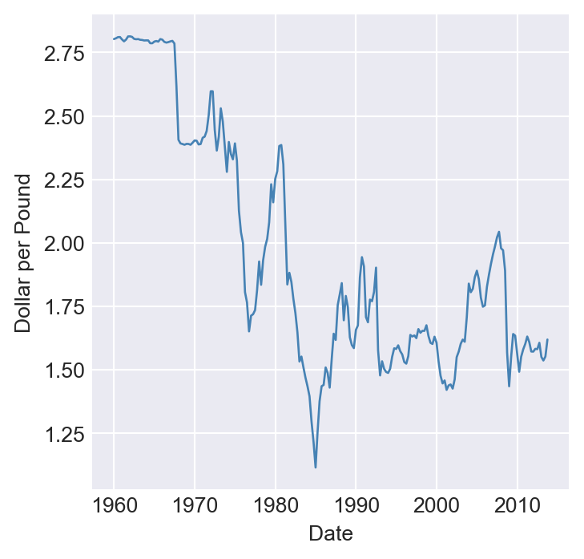
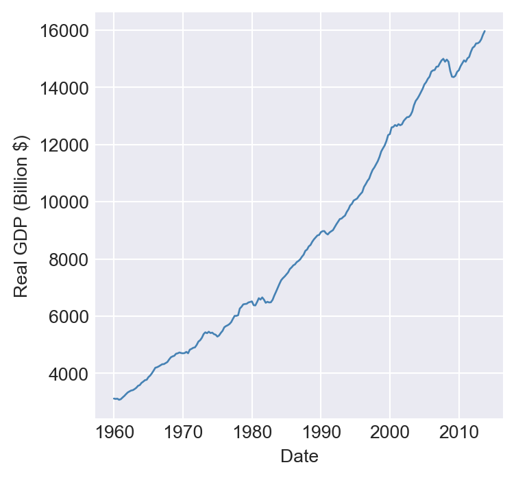
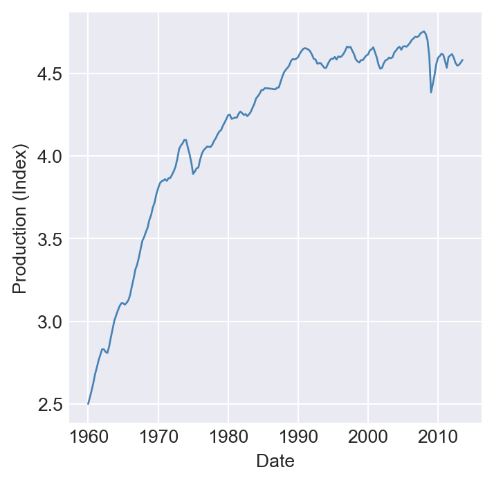
To download time series data from well-known resources, we can use the pandas_datareader library. For further details, see pandas_datareader.data.DataReader. For example, in the following code chunk, we download the U.S. real GDP data from the Federal Reserve Economic Data (FRED) database using the DataReader function in pandas_datareader.
# Download the U.S. real GDP data from FRED
start_date = '1950'
end_date = '2024'
GDP = pdr.data.DataReader('GDPC1', 'fred', start_date, end_date)
fig, ax = plt.subplots(figsize=(7, 3))
ax.plot(GDP.index, GDP['GDPC1'], linestyle='-')
ax.set(xlabel='Date', ylabel='Real GDP')
plt.show()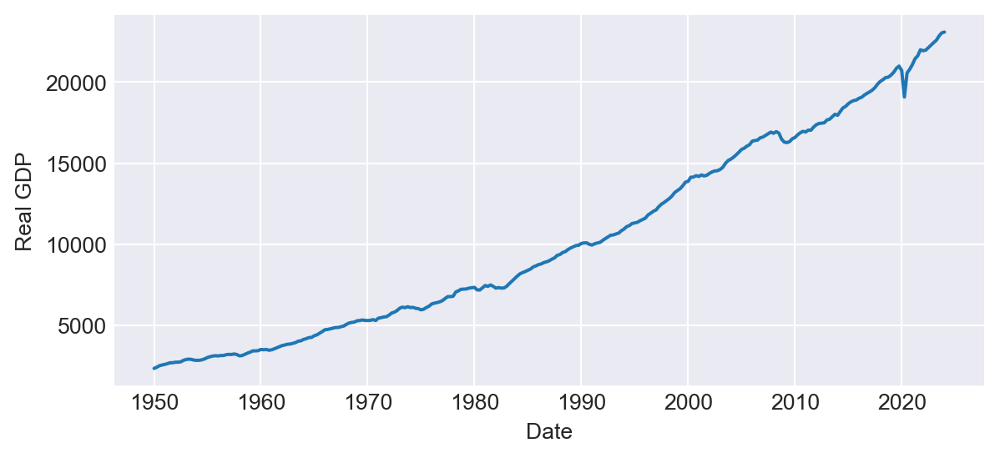
24.3 Terminology
We need to define some new tools and notations for the analysis of time series data. These include:
- Lags, leads, differences over time.
- Logarithms, growth rates and annualized growth rates.
Definition 24.2 (Lags, leads, differences, growth rates, and annualized growth rates) Let \(\{Y_t\}\) for \(t=1,\ldots,T\) be the time series of interest.
- The first lag of \(Y_t\) is \(Y_{t-1}\); the \(j\)th lag is \(Y_{t-j}\).
- The first lead of \(Y_t\) is \(Y_{t+1}\); the \(j\)th lead is \(Y_{t+j}\).
- The first difference of \(Y_t\) is \(\Delta Y_t = Y_t - Y_{t-1}\).
- The second difference of \(Y_t\) is \(\Delta^2 Y_t = \Delta Y_t - \Delta Y_{t-1}\).
- The one-period growth rate of \(Y\) is given by \(\frac{\Delta Y_t}{Y_{t-1}} = \frac{Y_t - Y_{t-1}}{Y_{t-1}} = \left(\frac{Y_t}{Y_{t-1}}-1\right)\).
- The annualized growth rate of \(Y\) with frequency \(s\) (i.e., annual growth rate if the one period growth rate were compounded) is \[ \left(\left(\frac{Y_t}{Y_{t-1}}\right)^{s} - 1\right). \]
The one-period growth rate of \(Y_t\) from period \(t-1\) to \(t\) defined in Definition 24.2 can be approximated by \(\Delta \ln Y_t\). This approximation is based on the following argument: \[ \begin{align} \Delta \ln Y_t&= \ln\left(\frac{Y_t}{Y_{t-1}}\right) = \ln\left(\frac{Y_{t-1}+\Delta Y_t}{Y_{t-1}}\right)= \ln\left(1+\frac{\Delta Y_t}{Y_{t-1}}\right)\\ &\approx \frac{\Delta Y_t}{Y_{t-1}} = \frac{Y_t - Y_{t-1}}{Y_{t-1}} = \frac{Y_t}{Y_{t-1}} - 1, \end{align} \] where the approximation follows from \(\ln(1+x)\approx x\) when \(x\) is small. Therefore, the annualized growth rate in \(Y_t\) with frequency \(s\) is approximately \(s\times 100 \Delta \ln Y_t\).
In order to calculate lags, leads, and differences over time, we need to set the index of the pandas DataFrame appropriately so that these operations can be performed easily. As an example, we consider the quarterly real GDP time series contained in the GrowthRate.xlsx file.
dfGrowth.columnsIndex(['Period', 'Y', 'YGROWTH', 'RECESSION'], dtype='object')In the following, we compute the first lag and annualized growth rate of the real GDP variable. The annualized percentage growth rate is calculated using the logarithmic approximation: \(4\times100\times\left(\ln(GDP_t)-\ln(GDP_{t-1})\right)=400\times\Delta\ln(GDP_t)\). The results for 2016 and 2017 are given in Table 24.1. For example, the annualized growth rate of the real GDP from 2016:Q4 to 2017:Q1 is \(400\times\left(\ln(16903.24)-\ln(16851.42)\right)=1.23\%\).
# Real GDP
dfGrowth["GDP"] = np.exp(dfGrowth["Y"])
# Annualized growth rate of GDP using the logarithmic approximation
dfGrowth['AnnualRate'] = dfGrowth['Y'].diff() * 400
# First lag of GDP
dfGrowth['GDP_lag1'] = dfGrowth["GDP"].shift(1) # Print data for 2016 and 2017
df_subset = dfGrowth.loc['2016':'2017',:]
df_subset[['GDP', 'Y', 'AnnualRate', 'GDP_lag1']].round(2)| GDP | Y | AnnualRate | GDP_lag1 | |
|---|---|---|---|---|
| 2016-01-01 | 16571.57 | 9.72 | 0.58 | 16547.62 |
| 2016-04-01 | 16663.52 | 9.72 | 2.21 | 16571.57 |
| 2016-07-01 | 16778.15 | 9.73 | 2.74 | 16663.52 |
| 2016-10-01 | 16851.42 | 9.73 | 1.74 | 16778.15 |
| 2017-01-01 | 16903.24 | 9.74 | 1.23 | 16851.42 |
| 2017-04-01 | 17031.09 | 9.74 | 3.01 | 16903.24 |
| 2017-07-01 | 17163.89 | 9.75 | 3.11 | 17031.09 |
| 2017-10-01 | 17271.70 | 9.76 | 2.50 | 17163.89 |
As another example, we consider the quarterly U.S. macroeconomic dataset contained in the macroseries.csv file. We calculate the first lag, the first difference, and the annualized growth rate of the U.S. Consumer Price Index (CPI). Figure 24.4 displays the quarterly U.S. CPI index from 1957 to 2005. The shaded areas indicate recession periods, during which the real GDP growth rate is negative. The figure shows that the index exhibits an upward trend over time, particularly after the 1970s.
# Load the macroeconomic data set
df = pd.read_csv('data/macroseries.csv', header = 0)
# Set the index
df.index = pd.date_range(start = '1957-01-01', periods=len(df), freq = 'QS')
df.columnsIndex(['periods', 'u_rate', 'cpi', 'ff_rate', '3_m_tbill', '1_y_tbond',
'dollar_pound_erate', 'gdp_jp', 't_from_1960', 'recession', 'GS10',
'TB3MS', 'RSPREAD'],
dtype='object')# Plot of the U.S. CPI index
fig, ax = plt.subplots(1, 1, figsize = (6,4))
ax.plot('cpi', data = df, linestyle = '-')
ax.fill_between(df.index, 0, 199, where=(df['recession']==1), alpha=0.3)
ax.set(xlabel = 'Date', ylabel = 'CPI quarterly')
plt.show()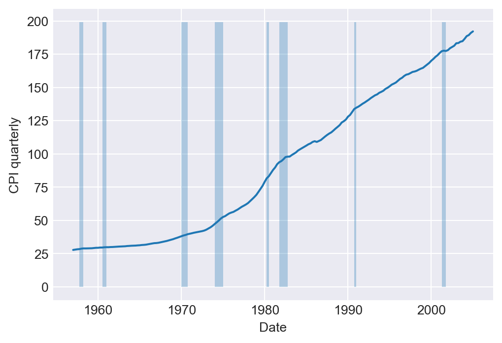
For the CPI variable, we compute lags, differences, and annualized growth rates. The CPI in the first quarter of 2004 (2004:Q1) was \(186.57\), and in the second quarter of 2004 (2004:Q2), it was $188.60. Then, the one-period percentage growth rate of the CPI from 2004:Q1 to 2004:Q2 is
\[ 100\times\left(\frac{188.60-186.57}{186.57}\right)=1.088\%. \]
The annualized growth rate of the CPI (inflation rate) from 2004:Q1 to 2004:Q2 is \(4\times 1.088=4.359\%\). Using the logarithmic approximation, the annualized growth rate of the CPI from 2004:Q1 to 2004:Q2 is \(4\times 100\times(\ln 188.60 - \ln 186.57)=4.329\%\). In Table 24.2, we present the annualized growth rate, the first lag, and the first difference of the CPI for the last five quarters.
# A subset of the U.S. CPI
df['Inf'] = 400*(np.log(df['cpi']) - np.log(df['cpi'].shift(1)))
df['Inf_lag1'] = df['Inf'].shift(1)
df['Delta_Inf'] = df['Inf'] - df['Inf_lag1']
df[['cpi','Inf', 'Inf_lag1', 'Delta_Inf']].tail().round(3)| cpi | Inf | Inf_lag1 | Delta_Inf | |
|---|---|---|---|---|
| 2004-01-01 | 186.567 | 3.806 | 0.867 | 2.939 |
| 2004-04-01 | 188.600 | 4.336 | 3.806 | 0.530 |
| 2004-07-01 | 189.367 | 1.623 | 4.336 | -2.713 |
| 2004-10-01 | 191.033 | 3.505 | 1.623 | 1.882 |
| 2005-01-01 | 192.167 | 2.366 | 3.505 | -1.139 |
Finally, in Figure 24.5, we plot the U.S. quarterly inflation rate over 1960–2005. The figure shows that inflation fluctuates over time, exhibiting an upward trend until 1980, followed by a decline.
# Plot of U.S. quarterly inflation rate
df_subset = df.loc['1960-01-01':'2005-01-01',:]
fig, ax = plt.subplots(1, 1, figsize = (6,4))
ax.plot('Inf', data = df_subset, linestyle = '-')
ax.axhline(0, linestyle = '--', color = 'black')
ax.fill_between(df_subset.index, -2.5, 15, where=(df_subset['recession']==1), alpha=0.3)
ax.set(xlabel = 'Date', ylabel = 'Annual Inflation')
plt.show()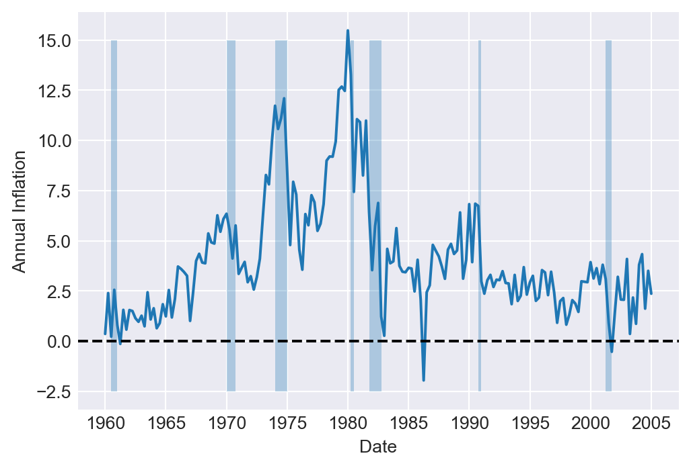
24.4 Stationarity and autocorrelation
The idea of random sampling from a large population is not suitable for time series data. It is very common for time series data to exhibit correlation over time. Therefore, in order to learn about the distribution \(\{Y_1,\dots,Y_T\}\) (joint, marginals, conditionals) a notion of constancy is needed (Hansen (2022)). Such a notion is stationarity, which is one of the most important concepts in time series analysis. It enables us to use historical relationships to forecast future values, making it a key requirement for ensuring external validity. Intuitively, if a time series is stationary, its future resembles its past in a probabilistic sense.
Definition 24.3 (Strict stationarity) A time series \(Y\) is strictly stationary if its probability distribution does not change over time, i.e., if the joint distribution of \((Y_{s+1},Y_{s+2},\dots,Y_{s+T})\) does not depend on \(s\) regardless of the value of \(T\). Otherwise, \(Y\) is said to be nonstationary. A pair of time series \(Y\) and \(X\) is said to be jointly stationary if the joint distribution of \((X_{s + 1}, Y_{s + 1}, X_{s + 2}, Y_{s + 2},\ldots, X_{s + T}, Y_{s + T})\) does not depend on \(s\) regardless of the value of \(T\).
This definition can be generalized the \(k\)-vector of time series processes. Strict stationarity is a strong assumption as it does not allow for heterogeneity and/or strong persistence. It may also be difficult to observe whether a given time series is stationary by simply examining its time series plot.
Definition 24.4 (Weak stationarity) A time series \(Y\) is weakly stationary if its first and second moments exist and are finite, and they do not change over time. Also, its \(k\)-th autocovariance must only depend on \(k\) regardless of the value of \(T\).
Assume that \(Y\) is weakly stationary such that \(\text{E}(Y_t) = \mu\) and \(\text{var}(Y_t) = \sigma_Y^2\) for all \(t\). It is natural to expect that the leads and lags of \(Y\) are correlated. The correlation of \(Y_t\) with its lag terms is called autocorrelation or serial correlation.
Definition 24.5 (Autocorrelation) The \(k\)-th autocovariance of a series \(Y\) (denoted by \(\gamma(k)\equiv\text{cov}(Y_{t},Y_{t-k})\)) is the covariance between \(Y_t\) and its \(k\)-th lag \(Y_{t-k}\) (or \(k\)-th lead \(Y_{t+k}\)). The \(k\)-th autocorrelation coefficient between \(Y_t\) and \(Y_{t-k}\) is \[ \begin{align*} \rho(k) = \text{corr}(Y_{t},Y_{t-k})=\frac{\gamma(k)}{\sqrt{\text{var}(Y_t)\text{var}(Y_{t-k})}}=\frac{\gamma(k)}{\sigma_Y^2}. \end{align*} \tag{24.2}\]
The \(k\)-th autocorrelation coefficient is also called the \(k\)-th serial correlation coefficient and it is a measure of linear dependence. We can use the sample counterparts of the terms in Definition 24.5 to estimate the autocorrelation coefficients. The sample variance of \(Y\) is given by \[ \begin{align*} s_Y^2 = \frac{1}{T}\sum_{t=1}^T (Y_t - \overline{Y})^2, \end{align*} \]
where \(\overline{Y}\) is the sample average of \(Y\). The \(k\)-th sample autocovariance can be computed as \[ \begin{align*} \widehat{\gamma}(k) = \frac{1}{T}\sum_{t=k+1}^T(Y_t - \overline{Y}_{k+1,T})(Y_{t-k} - \overline{Y}_{1,T-k}), \end{align*} \tag{24.3}\]
where \(\overline{Y}_{k+1,T}\) is the sample average of \(Y\) for \(t=k+1,k+2,\dots,T\). Then, we can estimate the \(\rho(k)\) by the \(k\)th sample autocorrelation (serial correlation), which is given by \[ \begin{align*} \widehat{\rho}(k) = \frac{\widehat{\gamma}(k)}{s_Y^2}. \end{align*} \tag{24.4}\]
In Python, the statsmodels.tsa module contains classes and functions for time-series analysis. For details, see the documentation. The statsmodels.tsa.stattools module contains a variety of functions that are useful for time series analysis, some of which are listed below:
acf(): Compute the autocorrelation function.pacf(): Compute the partial autocorrelation function.adfuller(): Augmented Dickey-Fuller unit root test.
As an example, we compute the sample serial correlations of the U.S. GDP growth rate. The first four sample autocorrelations are \(\hat{\rho}_1 = 0.33\), \(\hat{\rho}_2 = 0.26\), \(\hat{\rho}_3 = 0.10\), and \(\hat{\rho}_4 = 0.11\). These values suggest that GDP growth rates are mildly positively autocorrelated: when GDP grows faster than average in one period, it tends to grow faster than average in the subsequent period as well.
# ACF of the US GDP growth rate
stt.acf(dfGrowth.YGROWTH, nlags=12).round(3)array([ 1. , 0.333, 0.263, 0.102, 0.108, -0.029, 0.019, -0.035,
-0.044, 0.051, 0.051, 0.015, -0.089])We use the plot_acf() function to plot the sample serial correlations of the GDP growth rate (up to 12 lags) and its first-differenced version. In Figure 24.6, we observe that the autocorrelation of the GDP growth rate is positive and declines to zero after two lags. In contrast, the autocorrelations of the first-differenced GDP growth rate drop to zero after the first lag.
# Serial correlation of the US GDP growth rate and its first difference
fig, axes = plt.subplots(1, 2, figsize=(8, 3))
sm.graphics.tsa.plot_acf(dfGrowth.YGROWTH, lags=12, zero=False, auto_ylims=True, ax=axes[0], title=None)
sm.graphics.tsa.plot_acf(dfGrowth.YGROWTH.diff().dropna(), lags=12, zero=False, auto_ylims=True, ax=axes[1], title=None)
plt.show()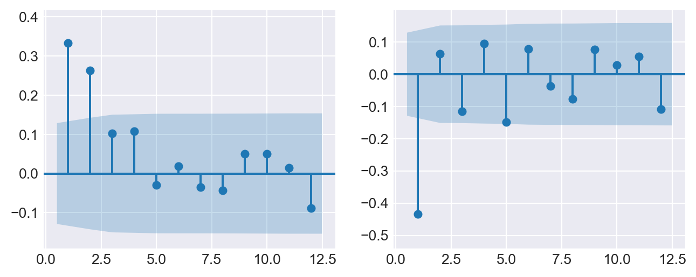
24.5 Forecast and forecast errors
Forecasting refers to predicting the values of a variable for the near future (out-of-sample). We denote the forecast for period \(T+h\) of a time series \(Y\), based on past observations \(Y_{T}, Y_{T-1}, \ldots\), and using a forecast rule (e.g., the oracle predictor), by \(Y_{T+h|T}\). When the forecast is based on an estimated rule, we denote it by \(\widehat{Y}_{T+h|T}\). Here, \(h\) represents the forecast horizon. When \(h = 1\), \(\widehat{Y}_{T+1|T}\) is called a one-step-ahead forecast; when \(h > 1\), \(\widehat{Y}_{T+h|T}\) is referred to as a multi-step-ahead forecast.
The forecast error is the difference between the actual value of the time series and the forecasted value: \[ \begin{align*} \text{Forecast error} = Y_{T+1} - \widehat{Y}_{T+1|T}. \end{align*} \tag{24.5}\]
To assess the forecast accuracy, we can use the mean squared forecast error (MSFE) and the root mean squared forecast error (RMSFE).
Definition 24.6 (Mean squared forecast error) The mean squared forecast error (MSFE) is \(\text{E}(Y_{T+1} - \widehat{Y}_{T+1|T})^2\), and the square root of the MSFE is called the root mean squared forecast error (RMSFE).
The MSFE and RMSFE can be used to compare the forecast accuracy of different models. There are two sources of randomness in the MSFE: (i) the randomness of the future value \(Y_{T+1}\), and (ii) the randomness of the estimated forecast \(\widehat{Y}_{T+1|T}\). Both randomness contributes to the forecast error. Assume that we use the mean \(\mu_Y\) of \(Y\) as the forecast for \(Y_{T+1}\). In this case, the estimated forecast is \(\widehat{Y}_{T+1|T}=\hat{\mu}_Y\), where \(\hat{\mu}_Y\) is an estimate of \(\mu_Y\). Then, the MSFE can be decomposed as follows: \[ \begin{align*} \text{MSFE} = \text{E}\left(Y_{T+1} - \hat{\mu}_Y\right)^2 = \E(Y_{T+1}-\mu_Y)^2+\E(\mu_Y-\hat{\mu}_Y)^2, \end{align*} \tag{24.6}\] where the second equality follows from the assumption that \(Y_{T+1}\) is uncorrelated with \(\hat{\mu}_Y\). The first term shows the error due to the deviation of \(Y_{T+1}\) from the mean \(\mu_Y\). The second term shows the error due to the deviation of the estimated forecast \(\hat{\mu}_Y\) from the mean \(\mu_Y\).
Definition 24.7 (Oracle forecast) The forecast rule that minimizes the MSFE is the conditional mean of \(Y_{T+1}\) given the in-sample observations \(Y_{1}, Y_{2},\dots,Y_T\), i.e., \(\E(Y_{T+1}|Y_{1}, Y_{2},\dots,Y_T)\). This forecast rule is called the oracle forecast.
The MSFE of the oracle predictor is the minimum possible MSFE. In Section 24.10, we discuss methods for estimating the MSFE and RMSFE in practice.
24.6 Autoregressions
To forecast the future values of the time series \(Y_t\), a natural starting point is to use information available from the history of \(Y_t\). An autoregression (AR) model is a regression in which \(Y_t\) is regressed on its own past values (time lag terms). The number of lags included as regressors is referred to as the order of the regression.
Definition 24.8 (The AR(\(p\)) model) The \(p\)-th order autoregressive (AR(\(p\))) model represents the conditional expectation of \(Y_t\) as a linear function of \(p\) of its lagged values: \[ Y_t = \beta_0+\beta_1 Y_{t-1}+\beta_2Y_{t-2}+\dots+\beta_p Y_{t-p}+u_t, \tag{24.7}\]
where \(\E\left(u_t|Y_{t-1},Y_{t-2}, \dots\right)=0\). The number of lags \(p\) is called the order, or the lag length, of the autoregression.
The coefficients in the AR(\(p\)) model do not have a causal interpretation. For example, if we fail to reject \(H_0:\beta_1=0\), then we will conclude that \(Y_{t-1}\) is not useful for forecasting \(Y_t\).
The property \(\E\left(u_t|Y_{t-1}, Y_{t-2}, \dots\right) = 0\) has two important implications. The first implication is that the error terms \(u_t\)’s are uncorrelated, i.e., \(\text{corr}(u_t,u_{t-k})=0\) for \(k\geq 1\). To see this, we know that if \(\E(u_t|u_{t-1})=0\), then \(\corr(u_t,u_{t-1})=0\) by the law of iterated expectations. The AR(\(p\)) model implies that \[ u_{t-1}=Y_{t-1}-\beta_0-\beta_1 Y_{t-2}-\cdots-\beta_p Y_{t-p-1}=f(Y_{t-1},Y_{t-2},\dots,Y_{t-p-1}), \] where \(f\) indicates that \(u_{t-1}\) is a function of \(Y_{t-1},Y_{t-2},\dots,Y_{t-p-1}\). Then, \(\E(u_t|Y_{t-1},Y_{t-2},\dots)=0\) suggests that \[ \E(u_t|u_{t-1})=\E(u_t|f(Y_{t-1},Y_{t-2},\dots,Y_{t-p-1}))=0. \]
Thus, \(\corr(u_t,u_{t-1})=0\). A similar argument can be made for \(\corr(u_t,u_{t-2})=0\), and so on.
The second implication is that the best forecast of \(Y_{T+1}\) based on its entire history depends on only the most recent \(p\) past values: \[ \begin{align*} &Y_t = \beta_0+\beta_1 Y_{t-1}+\beta_2Y_{t-2}+\dots+\beta_pY_{t-p}+u_t\\ &\implies Y_{T+1} = \beta_0+\beta_1 Y_{T}+\beta_2Y_{T-1}+\dots+\beta_pY_{T-p+1}+u_{T+1}\\ &\implies \underbrace{\E(Y_{T + 1}| Y_1,\dots, Y_{T})}_{Y_{T+1|T}}=\beta_0+\beta_1 Y_{T}+\beta_2Y_{T-1}+\dots+\beta_pY_{T-p+1}. \end{align*} \]
In Python, statsmodels.api.tsa.ar_model.AutoReg, statsmodels.api.tsa.arima.model.ARMA, and statsmodels.api.tsa.arima.model.ARIMA can be utilized for the estimation of AR models. We can also resort the OLS estimator by using statsmodels.formula.api.smf.ols for estimation. In Section 22.8, we specify the assumptions that we need for the estimation of AR models by the OLS estimator.
We use the data set in dfGrowth on the U.S. GDP growth rate over the period 1962:Q1-2017:Q3 to estimate the following AR models: \[
\begin{align}
&\text{GDPGR}_t=\beta_0+\beta_1{\tt GDPGR}_{t-1}+u_t,\\
&\text{GDPGR}_t=\beta_0+\beta_1{\tt GDPGR}_{t-1}+\beta_2{\tt GDPGR}_{t-2}+u_t,
\end{align}
\tag{24.8}\] where \(\text{GDPGR}_t\) denotes the GDP growth rate at time \(t\). We use the OLS estimator with heteroskedasticity-robust standard errors to estimate these models.
# Read the data
mydata = dfGrowth.loc['1962-01-01':'2017-07-01', ['YGROWTH']]
# Create lagged variables for AR(1) and AR(2)
mydata['Ylag1'] = mydata['YGROWTH'].shift(1)
mydata['Ylag2'] = mydata['YGROWTH'].shift(2)
# AR(1) Model
model1 = smf.ols(formula='YGROWTH ~ YGROWTH.shift(1)', data=mydata).fit(vcov_type='HC1')
# model1 = smf.ols(formula='YGROWTH ~ Ylag1', data=mydata[1:]).fit(vcov_type='HC1')
# AR(2) Model
model2 = smf.ols(formula='YGROWTH ~ YGROWTH.shift(1)+ YGROWTH.shift(2)', data=mydata).fit(vcov_type='HC1')
# model2 = smf.ols(formula='YGROWTH ~ Ylag1 + Ylag2', data=mydata).fit(vcov_type='HC1')# Estimation results for the AR(1) and AR(2) models
info_dict = {
'Observations': lambda x: f"{int(x.nobs)}",
'AIC': lambda x: f"{x.aic:.2f}",
'BIC': lambda x: f"{x.bic:.2f}"
}
results_table = summary_col(
[model1, model2],
stars=True,
model_names=['AR(1)', 'AR(2)'],
info_dict=info_dict,
float_format='%0.3f'
)
results_table| AR(1) | AR(2) | |
| Intercept | 1.955*** | 1.608*** |
| (0.278) | (0.305) | |
| YGROWTH.shift(1) | 0.336*** | 0.276*** |
| (0.063) | (0.067) | |
| YGROWTH.shift(2) | 0.176*** | |
| (0.066) | ||
| R-squared | 0.113 | 0.140 |
| R-squared Adj. | 0.109 | 0.133 |
| AIC | 1128.14 | 1119.06 |
| BIC | 1134.94 | 1129.26 |
| Observations | 222 | 221 |
Standard errors in parentheses.
* p<.1, ** p<.05, ***p<.01
The estimation results are presented in Table 24.3. The estimated models are \[ \begin{align} &\widehat{\text{GDPGR}}_t=1.955+0.336{\tt GDPGR}_{t-1},\\ &\widehat{\text{GDPGR}}_t=1.608+0.276{\tt GDPGR}_{t-1}+0.176{\tt GDPGR}_{t-2}. \end{align} \]
Note that we use the sample data over the period 1962:Q1-2017:Q3 to estimate both models. Thus, the last time period in the sample is \(T=2017:Q3\). We want to obtain the forecast of the growth rate in \(T+1=2017:Q4\) based on the estimated AR(\(2\)) model. The estimated model suggests that \[ \begin{align*} \text{GDPGR}_{2017:Q4|2017:Q3} &= 1.61 + 0.28 \text{GDPGR}_{2017:Q3} + 0.18 \text{GDPGR}_{2017:Q2}\\ & = 1.61 + 0.28\times 3.11 + 0.18 \times 3.01\approx3.0. \end{align*} \] Since the actual growth rate in 2017:Q4 is \(2.5\%\), the forecast error is \(2.5\% - 3.0\% = -0.5\) percentage points.
We used the smf.ols() function to estimate the AR(\(1\)) and AR(\(2\)) models for the GDP growth rate above. Below, we use the ARIMA function from the statsmodels.tsa.arima.model module to estimate the AR(\(1\)) and AR(\(2\)) models for the GDP growth rate. In the ARIMA function, the order of the model is specified as (p, d, q), where p is the order of the autoregressive part, d is the order of differencing, and q is the order of the moving average part. Note that although the estimated coefficients are the same as those presented in Table 24.3, the standard errors are different because the ARIMA function does not use the heteroskedasticity-robust standard errors.
# Read the data
mydata = dfGrowth.loc['1962-01-01':'2017-07-01', ['YGROWTH']]
# Drop missing values to ensure compatibility with ARIMA models
mydata = mydata.dropna()
# AR(1) Model
ar1_model = ARIMA(mydata['YGROWTH'], order=(1, 0, 0)).fit()
# AR(2) Model
ar2_model = ARIMA(mydata['YGROWTH'], order=(2, 0, 0)).fit()
# Summary of models
print("AR(1) Model Summary:")
print(ar1_model.summary())
print("\nAR(2) Model Summary:")
print(ar2_model.summary())AR(1) Model Summary:
SARIMAX Results
==============================================================================
Dep. Variable: YGROWTH No. Observations: 223
Model: ARIMA(1, 0, 0) Log Likelihood -564.997
Date: Sat, 11 Oct 2025 AIC 1135.995
Time: 11:35:05 BIC 1146.216
Sample: 01-01-1962 HQIC 1140.121
- 07-01-2017
Covariance Type: opg
==============================================================================
coef std err z P>|z| [0.025 0.975]
------------------------------------------------------------------------------
const 2.9796 0.311 9.585 0.000 2.370 3.589
ar.L1 0.3365 0.055 6.141 0.000 0.229 0.444
sigma2 9.2890 0.611 15.209 0.000 8.092 10.486
===================================================================================
Ljung-Box (L1) (Q): 0.82 Jarque-Bera (JB): 43.19
Prob(Q): 0.37 Prob(JB): 0.00
Heteroskedasticity (H): 0.37 Skew: -0.05
Prob(H) (two-sided): 0.00 Kurtosis: 5.15
===================================================================================
Warnings:
[1] Covariance matrix calculated using the outer product of gradients (complex-step).
AR(2) Model Summary:
SARIMAX Results
==============================================================================
Dep. Variable: YGROWTH No. Observations: 223
Model: ARIMA(2, 0, 0) Log Likelihood -561.492
Date: Sat, 11 Oct 2025 AIC 1130.985
Time: 11:35:05 BIC 1144.613
Sample: 01-01-1962 HQIC 1136.487
- 07-01-2017
Covariance Type: opg
==============================================================================
coef std err z P>|z| [0.025 0.975]
------------------------------------------------------------------------------
const 2.9876 0.375 7.967 0.000 2.253 3.723
ar.L1 0.2773 0.057 4.845 0.000 0.165 0.389
ar.L2 0.1758 0.057 3.065 0.002 0.063 0.288
sigma2 8.9989 0.576 15.629 0.000 7.870 10.127
===================================================================================
Ljung-Box (L1) (Q): 0.00 Jarque-Bera (JB): 56.16
Prob(Q): 0.98 Prob(JB): 0.00
Heteroskedasticity (H): 0.36 Skew: 0.04
Prob(H) (two-sided): 0.00 Kurtosis: 5.46
===================================================================================
Warnings:
[1] Covariance matrix calculated using the outer product of gradients (complex-step).We can also use the ARIMA() function to generate forecasts. For example, we can generate 10-step-ahead forecast for the GDP growth rate. The forecasted growth rates are presented in Table 24.4 and Figure 24.7. The table also includes the 95% forecast intervals for the forecasted growth rates. We discuss how to construct the forecast intervals in Section 24.10.
# Read the data
GrowthGDP = dfGrowth["YGROWTH"]
# Fit the ARIMA model
model = ARIMA(GrowthGDP, order=(2, 0, 0))
m1 = model.fit()
# Forecast with confidence intervals
forecast_horizon = 10
forecast = m1.get_forecast(steps=forecast_horizon)
forecast_mean = forecast.predicted_mean
conf_int = forecast.conf_int(alpha=0.05) # 95% confidence interval (example)
# Create dataframe
forecast_df = pd.DataFrame({
"Forecast": forecast_mean,
"Lower": conf_int.iloc[:, 0],
"Upper": conf_int.iloc[:, 1]
})
forecast_df| Forecast | Lower | Upper | |
|---|---|---|---|
| 2018-01-01 | 2.880326 | -3.111557 | 8.872209 |
| 2018-04-01 | 2.882656 | -3.335474 | 9.100785 |
| 2018-07-01 | 2.946846 | -3.443682 | 9.337374 |
| 2018-10-01 | 2.965045 | -3.462630 | 9.392721 |
| 2019-01-01 | 2.980949 | -3.461819 | 9.423718 |
| 2019-04-01 | 2.988439 | -3.458759 | 9.435637 |
| 2019-07-01 | 2.993206 | -3.455530 | 9.441941 |
| 2019-10-01 | 2.995795 | -3.453431 | 9.445020 |
| 2020-01-01 | 2.997319 | -3.452070 | 9.446707 |
| 2020-04-01 | 2.998179 | -3.451262 | 9.447621 |
# Plot the forecasted growth rates
plt.figure(figsize=(6, 4))
plt.plot(GrowthGDP, label="Observed", color="steelblue", linewidth=1)
plt.plot(forecast_mean, label="Forecast", color="red", linestyle="--", linewidth=1)
plt.fill_between(
forecast_mean.index,
conf_int.iloc[:, 0],
conf_int.iloc[:, 1],
color="red",
alpha=0.2,
label="Confidence interval"
)
plt.xlabel("Date", fontsize=10)
plt.ylabel("GDP Growth Rate", fontsize=10)
plt.axhline(y=0, color="black", linestyle="--", linewidth=1)
plt.legend(loc="upper left", fontsize=10, frameon=False)
plt.show()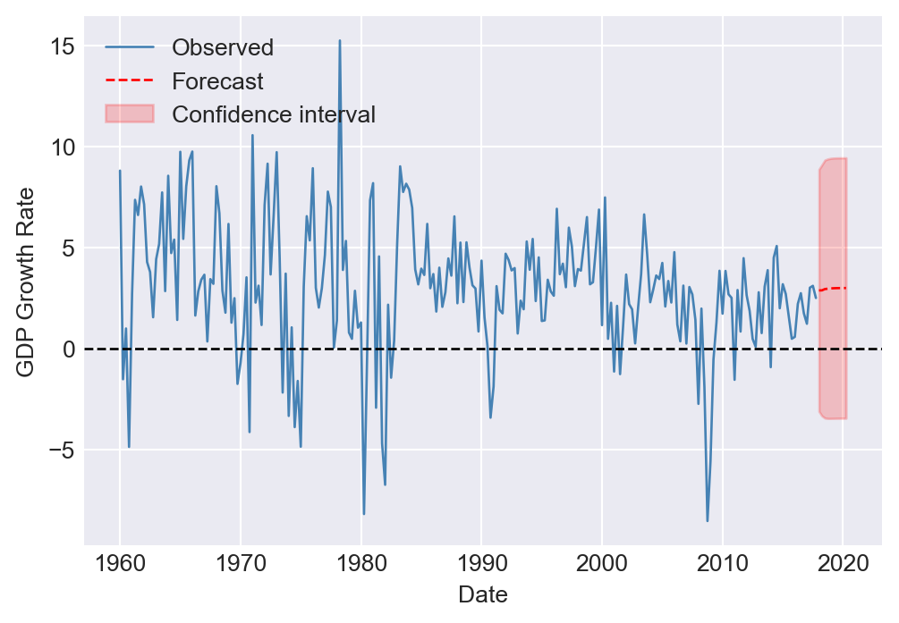
In the next example, we use the data set in macroseries.csv to estimate the AR(\(1\)) and AR(\(4\)) models for the change in the U.S. inflation rate.
# AR(1) and AR(4) models for the change U.S. inflation rate
df['L1_Delta_Inf'] = df['Delta_Inf'].shift(1)
df['L2_Delta_Inf'] = df['Delta_Inf'].shift(2)
df['L3_Delta_Inf'] = df['Delta_Inf'].shift(3)
df['L4_Delta_Inf'] = df['Delta_Inf'].shift(4)
df_subset = df.loc['1962-01-01':'2004-10-01',:]
AR_1 = smf.ols(formula = 'Delta_Inf ~ L1_Delta_Inf',
data = df_subset).fit(cov_type='HC1')
AR_4 = smf.ols(formula = 'Delta_Inf ~ L1_Delta_Inf + L2_Delta_Inf + L3_Delta_Inf + L4_Delta_Inf', data = df_subset).fit(cov_type='HC1')# Present the models using summary_col
info_dict = {'N':lambda x: "{0:d}".format(int(x.nobs)),
'AIC':lambda x: "{:.2f}".format(x.aic),
'BIC':lambda x: "{:.2f}".format(x.bic),
}
results_table = summary_col([AR_1, AR_4], stars=True, model_names=['AR(1)', 'AR(4)'], info_dict=info_dict, float_format='%0.3f')
results_table| AR(1) | AR(4) | |
| Intercept | 0.017 | 0.022 |
| (0.127) | (0.118) | |
| L1_Delta_Inf | -0.238** | -0.258*** |
| (0.097) | (0.093) | |
| L2_Delta_Inf | -0.322*** | |
| (0.081) | ||
| L3_Delta_Inf | 0.158* | |
| (0.084) | ||
| L4_Delta_Inf | -0.030 | |
| (0.093) | ||
| R-squared | 0.056 | 0.204 |
| R-squared Adj. | 0.051 | 0.185 |
| AIC | 665.27 | 642.05 |
| BIC | 671.56 | 657.78 |
| N | 172 | 172 |
Standard errors in parentheses.
* p<.1, ** p<.05, ***p<.01
The estimation results are presented in Table 24.5. The estimated AR(\(1\)) model is \[ \widehat{\Delta \text{inf}}_t = 0.017 - 0.238 \Delta \text{inf}_{t-1}. \]
The coefficient estimate for the lag of the change in inflation is \(-0.238\) and it is statistically significant at the conventional levels. In the dataset, the inflation rate for 2004:Q3 is 1.6 and for 2004:Q4 is 3.5. Hence, \(\Delta \text{inf}_{\text{2004:Q4}}=3.5-1.6=1.9\). Then, \(\widehat{\Delta \text{inf}}_{\text{2005:Q1}}=0.017 - 0.238\times 1.9 = -0.4352\) and \(\widehat{\text{inf}}_{\text{2005:Q1}}=-0.4352 + 3.5 = 3.0648\).
The estimated AR(4) model for the change in inflation is \[ \widehat{\Delta \text{inf}}_t = 0.022 - 0.258 \Delta \text{inf}_{t-1} - 0.322 \Delta \text{inf}_{t-2} + 0.158 \Delta \text{inf}_{t-3} - 0.030 \Delta \text{inf}_{t-4}. \]
We observe that the fit of the model improves significantly compared to the AR(\(1\)) model, as indicated by an increase in the adjusted R-squared to 0.185. Furthermore, in the AR(\(4\)) model, the additional time lag terms are jointly statistically significant, as shown by the \(F\)-test result below.
hypotheses = ['L2_Delta_Inf=0', 'L3_Delta_Inf=0', 'L4_Delta_Inf=0']
ftest = AR_4.f_test(hypotheses)
print(ftest)<F test: F=6.70644043665371, p=0.00026659957882544007, df_denom=167, df_num=3>24.7 Autoregressive distributed lag model
In AR models, we use only the lagged values of the dependent variable \(Y\) as predictors. However, if there are other variables that may help in predicting \(Y\), we can incorporate them into the regression model. The autoregressive distributed lag (ADL) model is such a model. It includes lags of both the dependent variable \(Y\) and other explanatory variables as predictors.
Definition 24.9 (Autoregressive distributed lag model) The autoregressive distributed lag model with \(p\) lags of \(Y_t\) and \(q\) lags of \(X_t\), denoted ADL(\(p,q\)), is \[ Y_t = \beta_0 + \beta_1 Y_{t-1} + \dots + \beta_p Y_{t-p}+ \delta_1 X_{t-1}+\dots+ \delta_q X_{t-q}+u_t, \tag{24.9}\]
where \(\beta_0, \beta_1,\dots,\beta_p, \delta_1,\dots,\delta_q\), are unknown coefficients and \(u_t\) is the error term with \(\E\left(u_t|Y_{t-1}, Y_{t-2},\dots, X_{t-1}, X_{t-2},\dots\right) = 0\).
The assumption \(\E\left(u_t|Y_{t-1}, Y_{t-2},\dots, X_{t-1}, X_{t-2},\dots\right) = 0\) suggests that the error terms \(u_t\)’s are serially uncorrelated. Moreover, it indicates that the lag lengths \(p\) and \(q\) are correctly specified, such that the coefficients of lag terms beyond \(p\) and \(q\) are zero.
If there are multiple predictors \(X_1,\ldots,X_k\), then the ADL model defined in Definition 24.9 can be extended as follows:
\[
\begin{align}
Y_t &= \beta_0 + \beta_1Y_{t-1} + \beta_2Y_{t-2} +\ldots+ \beta_pY_{t-p}\nonumber\\
&+\delta_{11}X_{1t-1} + \delta_{12}X_{1t-2} + \ldots+\delta_{1q_1}X_{1t-q_1}\nonumber\\
&+\ldots+\delta_{k1}X_{kt-1} + \delta_{k2}X_{kt-2} + \ldots+\delta_{kq_k}X_{kt-q_k}+u_t,
\end{align}
\tag{24.10}\]
where \(q_1\) lags of the first predictor, \(q_2\) lags of the second predictor, and so forth are included in the model.
In the following ADL(\(2,1\)) and ADL(\(2,2\)) models, we consider the U.S. term spread (TSpread) as an additional predictor for the GDP growth rate. \[
\begin{align*}
&\text{GDPGR}_t=\beta_0+\beta_1{\tt GDPGR}_{t-1}+\beta_2{\tt GDPGR}_{t-2}+\delta_1{\tt TSpread}_{t-1}+u_t,\\
&\text{GDPGR}_t=\beta_0+\beta_1{\tt GDPGR}_{t-1}+\beta_2{\tt GDPGR}_{t-2}+\delta_1{\tt TSpread}_{t-1}+\delta_2{\tt TSpread}_{t-2}+u_t,
\end{align*}
\tag{24.11}\] where TSpread is the term spread, measured as the difference between the 10-year Treasury bond rate (the long-term interest rate) and the 3-month Treasury bill rate (the short-term interest rate).
We use the dataset provided in the TermSpread.csv file to estimate these models. In Figure 24.8, we plot the U.S. long-term and short-term interest rates. The figure shows that both interest rates tend to move together over time. Figure 24.9 displays the term spread, which is generally positive and tends to decline before the recession periods. This observation suggests that the term spread may serve as a useful predictor for the GDP growth rate.
# Read the term spread data
dfTermSpread = pd.read_csv('data/TermSpread.csv', header = 0)
dfTermSpread.index = pd.date_range(start = '1960-01-01', periods=len(dfTermSpread), freq = 'QS')
dfTermSpread.columnsIndex(['Period', 'GS10', 'TB3MS', 'RSPREAD', 'RECESSION'], dtype='object')# Long-term and short-term interest rates in the US
# Plot the long-term and short-term interest rates
plt.figure(figsize=(6, 4))
plt.plot(dfTermSpread.index, dfTermSpread['GS10'], label='10-Year Interest Rate', color='black', linewidth=1.5)
plt.plot(dfTermSpread.index, dfTermSpread['TB3MS'], label='3-Month Interest Rate', color='steelblue', linewidth=1.5)
plt.fill_between(dfTermSpread.index, 0, dfTermSpread['TB3MS'].max(), where=dfTermSpread['RECESSION'] == 1, color='steelblue', alpha=0.3)
plt.axhline(0, linestyle='--', color='black', linewidth=1)
plt.xlabel('Date', fontsize=10)
plt.ylabel('Percent per annum', fontsize=10)
plt.legend(fontsize=10)
plt.show()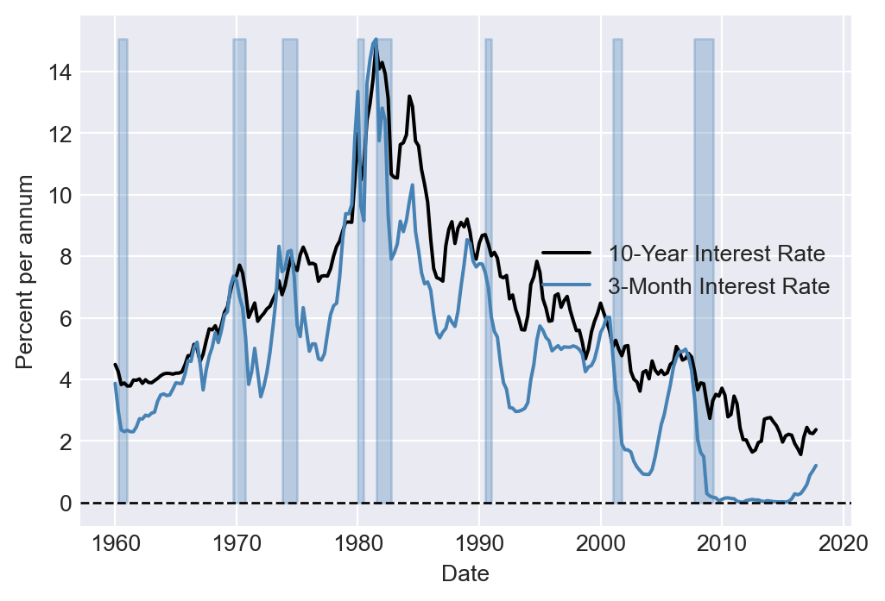
# Plot the term spread
plt.figure(figsize=(6, 4))
plt.plot(dfTermSpread.index, dfTermSpread['RSPREAD'], label='Term Spread', color='steelblue', linewidth=1.5)
plt.fill_between(dfTermSpread.index, dfTermSpread['RSPREAD'].min(), dfTermSpread['RSPREAD'].max(), where=dfTermSpread['RECESSION'] == 1, color='steelblue', alpha=0.3)
plt.axhline(0, linestyle='--', color='black', linewidth=1)
plt.xlabel('Date', fontsize=10)
plt.ylabel('Percentage points', fontsize=10)
plt.show()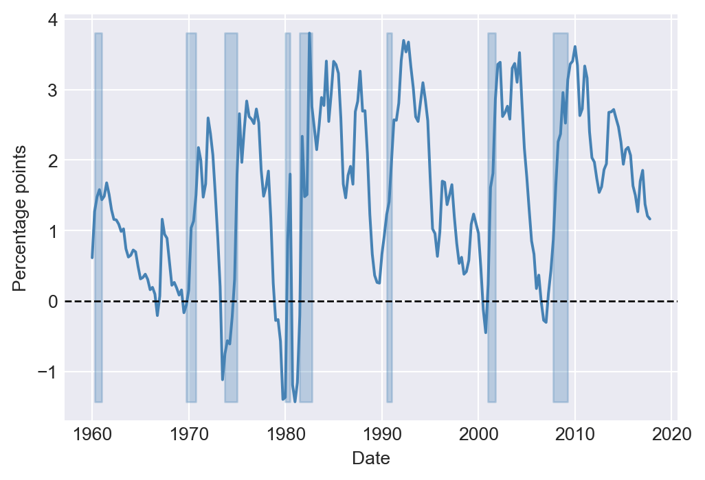
We use the following code chunk to estimate the ADL(\(2,1\)) and ADL(\(2,2\)) models. The estimation results are presented in Table 24.6. The estimated models are \[ \begin{align} &\widehat{\text{GDPGR}}_t=0.95+0.27{\tt GDPGR}_{t-1}+0.19{\tt GDPGR}_{t-2}+0.42{\tt TSpread}_{t-1},\\ &\widehat{\text{GDPGR}}_t=0.95+0.24{\tt GDPGR}_{t-1}+0.18{\tt GDPGR}_{t-2}-0.13{\tt TSpread}_{t-1}+0.62{\tt TSpread}_{t-2}. \end{align} \]
mydata = pd.merge(dfGrowth, dfTermSpread, left_index=True, right_index=True)
# Read the data
mydata = mydata.loc['1962-01-01':'2017-07-01', ['YGROWTH', 'RSPREAD']]
mydata = mydata.dropna()
# Create lagged variables for ADL(2,1) and ADL(2,2)
mydata['Ylag1'] = mydata['YGROWTH'].shift(1)
mydata['Ylag2'] = mydata['YGROWTH'].shift(2)
mydata['RSpread_lag1'] = mydata['RSPREAD'].shift(1)
mydata['RSpread_lag2'] = mydata['RSPREAD'].shift(2)
# ADL(2,1) Model
adl21_model = smf.ols(formula='YGROWTH ~ YGROWTH.shift(1) + YGROWTH.shift(2) + RSPREAD.shift(1)', data=mydata).fit(cov_type='HC1')
# adl21_model = smf.ols(formula='YGROWTH ~ Ylag1 + Ylag2 + RSpread_lag1', data=mydata[2:]).fit(cov_type='HC1')
# ADL(2,2) Model
adl22_model = smf.ols(formula='YGROWTH ~ YGROWTH.shift(1) + YGROWTH.shift(2) + RSPREAD.shift(1) + RSPREAD.shift(2)', data=mydata).fit(cov_type='HC1')
# adl22_model = smf.ols(formula='YGROWTH ~ Ylag1 + Ylag2 + RSpread_lag1 + RSpread_lag2', data=mydata[3:]).fit(cov_type='HC1')# Present the models using summary_col
info_dict={'N':lambda x: "{0:d}".format(int(x.nobs)),
'AIC':lambda x: "{:.2f}".format(x.aic),
'BIC':lambda x: "{:.2f}".format(x.bic),
}
results_table = summary_col([adl21_model, adl22_model], stars=True, model_names=['ADL(2,1)', 'ADL(2,2)'], info_dict=info_dict, float_format='%0.3f')
results_table| ADL(2,1) | ADL(2,2) | |
| Intercept | 0.946** | 0.949** |
| (0.474) | (0.462) | |
| YGROWTH.shift(1) | 0.265*** | 0.242*** |
| (0.081) | (0.077) | |
| YGROWTH.shift(2) | 0.189** | 0.175** |
| (0.077) | (0.076) | |
| RSPREAD.shift(1) | 0.421** | -0.132 |
| (0.182) | (0.420) | |
| RSPREAD.shift(2) | 0.621 | |
| (0.428) | ||
| R-squared | 0.165 | 0.175 |
| R-squared Adj. | 0.153 | 0.160 |
| AIC | 1114.66 | 1113.97 |
| BIC | 1128.25 | 1130.96 |
| N | 221 | 221 |
Standard errors in parentheses.
* p<.1, ** p<.05, ***p<.01
The estimated coefficients in the ADL(\(2,2\)) model on TSpread are statistically insignificant at the 5% level. The joint null hypothesis \(H_0:\delta_1=\delta_2=0\) can be tested using the F-statistic. The \(F\)-test result below shows that the coefficients on the term spread are jointly statistically significant.
hypotheses = ['RSPREAD.shift(1)=0', 'RSPREAD.shift(2)=0']
ftest = adl22_model.f_test(hypotheses)
print(ftest)<F test: F=3.9805978401042403, p=0.020060657423667954, df_denom=216, df_num=2>Finally, we use the ADL(\(2,2\)) model to forecast the GDP growth rate in 2017:Q4. The forecasted GDP growth rate is \[ \begin{align*} \widehat{\text{GDPGR}}_{2017:Q4|2017:Q3} &=0.95+0.24{\tt GDPGR}_{2017:Q3}+0.18{\tt GDPGR}_{2017:Q2}\\ &-0.13{\tt TSpread}_{2017:Q3}+0.62{\tt TSpread}_{2017:Q2} \\ &=0.95 + 0.24 \times 3.11 + 0.18 \times 3.01 - 0.13 \times 1.21 + 0.62 \times 1.37\\ &= 0.95 + 0.7464 + 0.5418 - 0.1573 + 0.8494 = 2.93. \end{align*} \] The actual GDP growth rate in 2017:Q4 was 2.5. Hence, the forecast error is \(2.5 - 2.93 = -0.43\) percentage points.
In the following code chunk, we estimate the ADL(\(2,1\)) and ADL(\(2,2\)) models for the GDP growth rate using the ARIMA() function from the statsmodels.tsa.arima.model module. Note that the parameter estimates are slightly different from those in Table 24.6, as the ARIMA() function uses a different estimation method.
mydata = pd.merge(dfGrowth, dfTermSpread, left_index=True, right_index=True)
# Read the data
mydata = mydata.loc['1962-01-01':'2017-07-01', ['YGROWTH', 'RSPREAD']]
mydata = mydata.dropna()
# Create lagged variables for ADL(2,1) and ADL(2,2)
mydata['Ylag1'] = mydata['YGROWTH'].shift(1)
mydata['Ylag2'] = mydata['YGROWTH'].shift(2)
mydata['RSpread_lag1'] = mydata['RSPREAD'].shift(1)
mydata['RSpread_lag2'] = mydata['RSPREAD'].shift(2)# ADL(2,1) Model
model_adl21 = ARIMA(mydata['YGROWTH'][2:], order=(2, 0, 0), exog=mydata[['RSpread_lag1']][2:])
adl21_model = model_adl21.fit()
print(adl21_model.summary()) SARIMAX Results
==============================================================================
Dep. Variable: YGROWTH No. Observations: 221
Model: ARIMA(2, 0, 0) Log Likelihood -554.521
Date: Sat, 11 Oct 2025 AIC 1119.041
Time: 11:35:07 BIC 1136.032
Sample: 07-01-1962 HQIC 1125.902
- 07-01-2017
Covariance Type: opg
================================================================================
coef std err z P>|z| [0.025 0.975]
--------------------------------------------------------------------------------
const 2.1486 0.466 4.609 0.000 1.235 3.062
RSpread_lag1 0.5128 0.239 2.147 0.032 0.045 0.981
ar.L1 0.2602 0.061 4.282 0.000 0.141 0.379
ar.L2 0.1875 0.060 3.105 0.002 0.069 0.306
sigma2 8.8427 0.572 15.454 0.000 7.721 9.964
===================================================================================
Ljung-Box (L1) (Q): 0.00 Jarque-Bera (JB): 58.31
Prob(Q): 0.97 Prob(JB): 0.00
Heteroskedasticity (H): 0.38 Skew: 0.12
Prob(H) (two-sided): 0.00 Kurtosis: 5.51
===================================================================================
Warnings:
[1] Covariance matrix calculated using the outer product of gradients (complex-step).# ADL(2,2) Model
model_adl22 = ARIMA(mydata['YGROWTH'][3:], order=(2, 0, 0), exog=mydata[['RSpread_lag1', 'RSpread_lag2']][3:])
adl22_model = model_adl22.fit()
print(adl22_model.summary()) SARIMAX Results
==============================================================================
Dep. Variable: YGROWTH No. Observations: 220
Model: ARIMA(2, 0, 0) Log Likelihood -549.573
Date: Sat, 11 Oct 2025 AIC 1111.145
Time: 11:35:07 BIC 1131.507
Sample: 10-01-1962 HQIC 1119.368
- 07-01-2017
Covariance Type: opg
================================================================================
coef std err z P>|z| [0.025 0.975]
--------------------------------------------------------------------------------
const 1.7937 0.489 3.671 0.000 0.836 2.751
RSpread_lag1 -0.1440 0.361 -0.399 0.690 -0.852 0.564
RSpread_lag2 0.8788 0.348 2.528 0.011 0.198 1.560
ar.L1 0.2554 0.061 4.194 0.000 0.136 0.375
ar.L2 0.1808 0.061 2.951 0.003 0.061 0.301
sigma2 8.6494 0.561 15.407 0.000 7.549 9.750
===================================================================================
Ljung-Box (L1) (Q): 0.00 Jarque-Bera (JB): 62.78
Prob(Q): 0.95 Prob(JB): 0.00
Heteroskedasticity (H): 0.39 Skew: 0.25
Prob(H) (two-sided): 0.00 Kurtosis: 5.57
===================================================================================
Warnings:
[1] Covariance matrix calculated using the outer product of gradients (complex-step).As an another example, we consider the inflation rate in the macroseries.csv file. According to the well-known Phillips curve, if unemployment is above its natural rate, then the rate of inflation is predicted to decrease. Hence, the change in inflation is negatively related to the lagged unemployment rate. Accordingly, Figure 24.10 shows that there is a negative relationship between the change in inflation and the lagged unemployment rate.
# The relationship between the change in inflation and the lagged unemployment rate
# Create lagged variables for the unemployment rate
df['L1_u_rate'] = df['u_rate'].shift(1)
df['L2_u_rate'] = df['u_rate'].shift(2)
df['L3_u_rate'] = df['u_rate'].shift(3)
df['L4_u_rate'] = df['u_rate'].shift(4)
# Subset the data
df_subset = df.loc['1962-01-01':'2004-10-01',:]
phillips = smf.ols(formula = 'Delta_Inf ~ L1_u_rate', data = df_subset).fit()
# Generate predictions for the fitted line
df_subset['predictions'] = phillips.predict(df_subset)
fig, ax = plt.subplots(figsize = (6,4))
ax.scatter('L1_u_rate', 'Delta_Inf', data = df_subset, color = 'steelblue', alpha = 1, label = 'Data', s = 15)
ax.plot(df_subset['L1_u_rate'], df_subset['predictions'], linestyle = '-', color = 'black', label = 'Fitted line', linewidth = 1.5)
ax.set(xlabel = 'Lagged unemployment rate', ylabel = 'Change in inflation')
plt.show()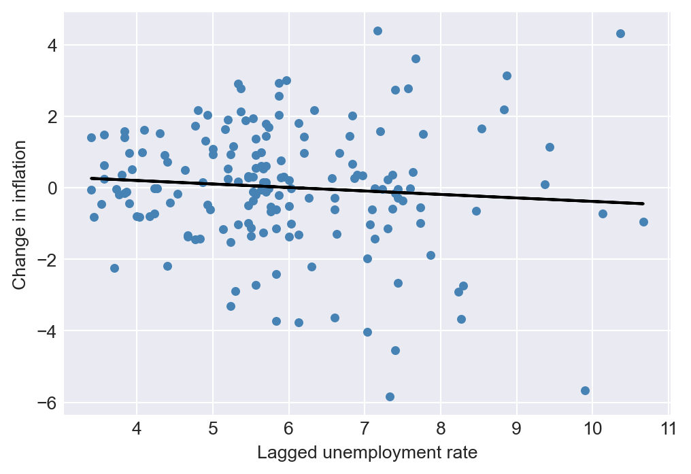
We consider the following ARDL(4,4) model for the change in inflation rate: \[ \begin{align*} \Delta \text{Inf}_t &= \beta_0 + \beta_1\Delta \text{Inf}_{t-1} + \beta_2\Delta \text{Inf}_{t-2} + \beta_3\Delta \text{Inf}_{t-3} + \beta_4\Delta \text{Inf}_{t-4}\\ &\quad + \delta_1\text{Urate}_{t-1} + \delta_2\text{Urate}_{t-2} + \delta_3\text{Urate}_{t-3} + \delta_4\text{Urate}_{t-4} + u_t, \end{align*} \tag{24.12}\] where \(\text{Urate}_t\) is the unemployment rate at time \(t\). The ARDL(4,4) model includes four lags of the change in inflation and four lags of the unemployment rate as predictors. The estimation results are presented in Table 24.7.
adl44 = smf.ols(formula = 'Delta_Inf ~ L1_Delta_Inf + L2_Delta_Inf + L3_Delta_Inf + L4_Delta_Inf + L1_u_rate + L2_u_rate + L3_u_rate + L4_u_rate',
data = df_subset).fit(cov_type='HC1')# Present the models using summary_col
info_dict={'N':lambda x: "{0:d}".format(int(x.nobs)),
'AIC':lambda x: "{:.2f}".format(x.aic),
'BIC':lambda x: "{:.2f}".format(x.bic),
}
results_table = summary_col([adl44], stars=True, model_names=['ADL(4,4)'], info_dict=info_dict, float_format='%0.3f')
results_table| ADL(4,4) | |
| Intercept | 1.304*** |
| (0.452) | |
| L1_Delta_Inf | -0.420*** |
| (0.089) | |
| L2_Delta_Inf | -0.367*** |
| (0.094) | |
| L3_Delta_Inf | 0.057 |
| (0.085) | |
| L4_Delta_Inf | -0.036 |
| (0.084) | |
| L1_u_rate | -2.636*** |
| (0.475) | |
| L2_u_rate | 3.043*** |
| (0.880) | |
| L3_u_rate | -0.377 |
| (0.912) | |
| L4_u_rate | -0.248 |
| (0.461) | |
| R-squared | 0.366 |
| R-squared Adj. | 0.335 |
| N | 172 |
| AIC | 610.79 |
| BIC | 639.12 |
Standard errors in parentheses.
* p<.1, ** p<.05, ***p<.01
We observe that the fit improves significantly compared to the AR(\(4\)) model in Table 24.5, as the reported adjusted R-squared is 0.335. Furthermore, the F-statistic for the joint null hypothesis \(H_0:\delta_1=\ldots=\delta_4=0\) indicates that the additional time lag terms for the unemployment rate are jointly statistically significant at the 5% level.
hypotheses = ['L1_u_rate=0', 'L2_u_rate=0', 'L3_u_rate=0', 'L4_u_rate=0']
ftest = adl44.f_test(hypotheses)
print('The F test value is {0:.3f} with a p-value of {1:.4f}.'.format(ftest.statistic, ftest.pvalue))The F test value is 8.443 with a p-value of 0.0000.24.8 The least squares assumptions for forecasting with multiple predictors
In this section, we state the assumptions that we need for the estimation of the AR and ADL models by the OLS estimator. We consider the following general ADL model, which includes \(m\) additional predictors. In this model, \(q_1\) lags of the first predictor, \(q_2\) lags of the second predictor, and so forth are incorporated: \[ \begin{align*} Y_t &= \beta_0 + \beta_1Y_{t-1} + \beta_2Y_{t-2} +\dots+ \beta_pY_{t-p}\\ &\quad +\delta_{11}X_{1,t-1} + \delta_{12}X_{1,t-2} + \dots +\delta_{1q_1}X_{1,t-q_1} + \dots \\ &\quad + \delta_{m1}X_{m,t-1} + \delta_{m2}X_{m,t-2} + \dots +\delta_{mq_m}X_{m,t-q_m}+u_t. \end{align*} \tag{24.13}\]
The first assumption indicates that the error term \(u_t\) has zero conditional mean given the lagged values of the dependent variable and the predictors. This assumption has two implications: (i) the error terms \(u_t\)’s are serially uncorrelated, and (ii) the lag lengths \(p\), \(q_1\), \(q_2\), , \(q_m\) are correctly specified, such that the coefficients of lag terms beyond \(p\), \(q_1\), \(q_2\), , \(q_m\) are zero. The first part of the second assumption indicates that the distribution of data does not change over time. This part can be considered as the time series version of the i.i.d asumption we used for the cross-sectional data. The second part indicates that \(\left(Y_t, X_{1t},\dots, X_{mt}\right)\) and \(\left(Y_{t-k}, X_{1,t-k},\dots,X_{m,t-k}\right)\) become independent as \(k\) gets larger. This assumption is sometimes referred to as the weak dependence assumption. The third and fourth assumptions are same as the ones we used for the multiple linear regression model.
Theorem 24.1 (Properties of OLS estimator using time series data) Under the least squares assumptions, the large-sample properties of the OLS estimator are similar to those in the case of cross-sectional data. Namely, the OLS estimator is consistent and has an asymptotic normal distribution when \(T\) is large.
24.9 Lag order selection
How should we choose the number of lags \(p\) in an AR(\(p\)) model? One approach to determining the number of lags is to use sequential downward \(t\) or \(F\) tests. However, this method may select a large number of lags. Alternatively, we can use information criteria to select the lag order. Information criteria balance bias (too few lags) against variance (too many lags).
Two widely used information criteria are the Bayesian information criterion (BIC) and the Akaike information criterion (AIC). For an AR(\(p\)) model, the BIC and AIC are defined as \[ \begin{align*} \text{BIC}(p) &= \ln\frac{SSR(p)}{T} + (p+1)\frac{\ln T}{T}, \\ \text{AIC}(p) &= \ln\frac{SSR(p)}{T} + (p+1)\frac{2}{T}, \end{align*} \tag{24.14}\] where \(SSR(p)\) is the sum of squared residuals from the AR(\(p\)) model. The estimator of \(p\) is the value that minimizes the BIC or AIC. That is, if \(\hat{p}\) is the estimator of \(p\), then it is defined as \[ \hat{p} = \arg\min_{p} \text{BIC}(p) \quad \text{or} \quad \hat{p} = \arg\min_{p} \text{AIC}(p). \tag{24.15}\]
Note that the first term in both BIC and AIC is always decreasing in \(p\) (larger \(p\), better fit). The second term is always increasing in \(p\). The second term is a penalty for using more parameters, and thus increasing the forecast variance. The penalty term is smaller for AIC than BIC, hence AIC estimates more lags (larger \(p\)) than the BIC. This may be desirable if we believe that longer lags are important for the dynamics of the process.
Theorem 24.2 The BIC estimator of \(p\) is a consistent estimator in the sense that \(P(\hat{p}=p)\to 1\), whereas the AIC estimator is not consistent.
Proof (Proof of Theorem 24.2). For simplicity, assume that true \(p\) is \(1\), then we need to show that (i) \(P(\hat{p}=0)\to 0\) and (ii) \(P(\hat{p}=2)\to 0\). To choose \(\hat{p}=0\), it must be the case that \(\text{BIC}(0)-\text{BIC}(1)<0\). Consider \(\text{BIC}(0)-\text{BIC}(1)\): \[ \text{BIC}(0)-\text{BIC}(1)=\ln(SSR(0)/T)-\ln(SSR(1)/T) -\ln(T)/T. \] It follows that \(SSR(0)/T=((T-1)/T)s_Y^2\to\sigma^2_Y\), where \(\sigma^2_Y\) is the variance of the process \(Y\) and \(s_Y^2\) is its sample counterpart. Similarly, \(SSR(1)/T=((T-2)/T)s^2_{\hat{u}}\to\sigma^2_{u}\), where \(\sigma^2_u\) is the variance of the error term. Thus, \[ \text{BIC}(0)-\text{BIC}(1)\to\ln(\sigma^2_Y)-\ln(\sigma^2_u), \] because \(\ln(T)/T\to 0\). Since \(\sigma^2_Y>\sigma^2_u\), it follows that \(\text{BIC}(0)-\text{BIC}(1)>0\). This implies that \(P(\hat{p}=0)\to 0\).
Simlarly, to choose \(\hat{p}=2\), it must be the case that \(\text{BIC}(2)-\text{BIC}(1)<0\). Consider \(T[\text{BIC}(2)-\text{BIC}(1)]\): \[ \begin{align*} &T[\text{BIC}(2)-\text{BIC}(1)]= T[\ln(SSR(2)/T)-\ln(SSR(1)/T)] +\ln(T)\\ &=T\ln(SSR(2)/SSR(1))+\ln(T)=-T\ln(1+F/(T-2))+\ln(T), \end{align*} \] where \(F=(SSR(1)-SSR(2))/(SSR(2)/(T-2))\) is the homoskedasticity-only \(F\)-statistic for testing \(H_0:\beta_2=0\) in the AR(\(2\)) model. Then, \[ \begin{align*} P(\text{BIC}(2)-\text{BIC}(1)<0)&= P(T[\text{BIC}(2)-\text{BIC}(1)]<0)\\ &=P([-T\ln(1+F/(T-2))+\ln(T)]<0)\\ \end{align*} \] Since \(T\ln(1+F/(T-2))-F\approx TF/(T-2)-F\xrightarrow{p}0\), we have \[ \begin{align*} P(\text{BIC}(2)-\text{BIC}(1)<0)&=P(T\ln(1+F/(T-2))>\ln(T))\to P(F>\ln(T))\to 0. \end{align*} \] Thus, \(P(\hat{p}=2)\to0\).
For the general case where \(0\leq p\leq p_{max}\), we can use the same argument to show that \(P(\hat{p}<p)\to0\) and \(P(\hat{p}>p)\to0\). Therefore, the BIC estimator is consistent.
In the case of AIC, we can use the same argument to show that \(P(\hat{p}=0)\to 0\). However, to show that \(P(\hat{p}=2)\to 0\), we need to show that \(P(\text{AIC}(2)-\text{AIC}(1)<0)\to 0\). Using the same argument as above, we have \[ \begin{align*} P(\text{AIC}(2)-\text{AIC}(1)<0)&=P(F>2)>0. \end{align*} \] Therefore, the AIC estimator is not consistent. For example, if the error terms are homoskedastic, then \[ \begin{align*} P(\text{AIC}(2)-\text{AIC}(1)<0)&=P(F>2)\to P(\chi^2_1>2)=0.16. \end{align*} \] In general, we have \(P(\hat{p}<p)\to0\), but \(P(\hat{p}>p)\not\to0\). Thus, the AIC can overestimate the number of lags even in large samples.
In Python, we can use statsmodels.api.tsa.arma_order_select_ic() to calculate AIC and BIC and the corresponding lag orders. As an example, consider determining the lag order of an AR model for the GDP growth rate. The lag order selected by the AIC is 4, while the BIC selects 2.
mydata = dfGrowth.loc['1962-01-01':'2017-07-01', ['YGROWTH']]
lag_order = sm.tsa.arma_order_select_ic(mydata.YGROWTH,
max_ar = 8, max_ma = 0,
ic = ['aic', 'bic'],
trend = 'n')
print('The lag order selected by AIC is {0:1.0f} and by BIC is {1:1.0f}.'.format(lag_order.aic_min_order[0], lag_order.bic_min_order[0]))The lag order selected by AIC is 4 and by BIC is 2.As another example, we consider the inflation rate in the macroseries.csv file. According to the results given below, the AIC suggests an AR(\(3\)) model, while the BIC suggests an AR(\(2\)) model for the change in inflation rate.
lag_order = sm.tsa.arma_order_select_ic(df_subset.Delta_Inf,
max_ar = 8, max_ma = 0,
ic = ['aic', 'bic'],
trend = 'n')
print('The lag order selected by AIC is {0:1.0f} and by BIC is {1:1.0f}.'.format(lag_order.aic_min_order[0], lag_order.bic_min_order[0]))The lag order selected by AIC is 3 and by BIC is 2.As in an autoregression, the BIC and the AIC can also be used to estimate the number of lags and variables in the time series regression model with multiple predictors. If the regression model has \(k\) coefficients (including the intercept), then \[ \begin{align} &\text{BIC}(k)=\ln\left(SSR(k)/T\right)+k\ln(T)/T,\\ &\text{AIC}(k)=\ln\left(SSR(k)/T\right)+2k/T. \end{align} \]
For each value of \(k\), the BIC (or AIC) can be computed, and the model with the lowest value of the BIC (or AIC) is preferred based on the information criterion.
24.10 Estimation of the MSFE and forecast intervals
Stock and Watson (2020) consider three estimators for estimating the MSFE. These estimators are:
- The standard error of the regression (SER) estimator,
- The final prediction error (FPE) estimator, and
- The pseudo out-of-sample (POOS) forecasting estimator.
The first two estimators are derived from the expression for the MSFE and rely on the stationarity assumption. Under stationarity, the MSFE for an AR(\(p\)) model can be expressed as: \[ \begin{align*} \text{MSFE}&=\E\left[\left(Y_{T+1}-\widehat{Y}_{T+1|T}\right)^2\right]\\ &=\E\big[(\beta_0+\beta_1 Y_{T}+\beta_2Y_{T-1}+\ldots+\beta_pY_{T-p+1}+u_{T+1}\\ &\quad- (\hat{\beta}_0+\hat{\beta}_1 Y_{T}+\hat{\beta}_2Y_{T-1}+\ldots+\hat{\beta}_pY_{T-p+1}))^2\big]\\ &=\E(u^2_{T+1})+\E\left(\left((\hat{\beta}_0-\beta_0)+(\hat{\beta}_1-\beta_1)Y_T+\ldots+(\beta_p-\hat{\beta}_p)Y_{T-p+1}\right)^2\right). \end{align*} \tag{24.16}\]
Since the variance of the OLS estimator is proportional to \(1/T\), the second term is is proportional to \(1/T\). Consequently, if the number of observations \(T\) is large relative to the number of autoregressive lags \(p\), then the contribution of the second term is small relative to the first term. This leads to the approximation MSFE\(\approx\sigma^2_u\), where \(\sigma^2_u\) is the variance of \(u_t\). Based on this simplification, the SER estimator of the MSFE is formulated as \[ \begin{align} \widehat{MSFE}_{SER}=s^2_{\hat{u}},\quad\text{where}\quad s^2_{\hat{u}}=\frac{SSR}{T-p-1}, \end{align} \tag{24.17}\] where \(SSR\) is the sum of squared residuals from the autoregression. Note that this method assumes stationarity and ignores estimation error stemming from the estimation of the forecast rule.
The FPE method incorporates both terms in the MSFE formula under the additional assumption that the error are homoskedastic. Under homoskedasticity, it can be shown that (see Appendix B) \[ \E\left(\left((\hat{\beta}_0-\beta_0)+(\hat{\beta}_1-\beta_1)Y_T+\ldots+(\beta_p-\hat{\beta}_p)Y_{T-p+1}\right)^2\right)\approx \sigma^2_u((p+1)/T). \] Then, the MSFE can be expressed as \(\text{MSFE}=\sigma^2_u+\sigma^2_u((p+1)/T)=\sigma^2_u(T+p+1)/T\). Then, the FPE estimator is given by \[ \begin{align} \widehat{MSFE}_{FPE}=\left(\frac{T+p+1}{T}\right)s^2_{\hat{u}}=\left(\frac{T+p+1}{T-p-1}\right)\frac{SSR}{T}. \end{align} \tag{24.18}\]
The third method, the pseudo out-of-sample (POOS) forecasting, does not require the stationarity assumption. In the following callout, we show how the POOS method is implemented.
Once we have an estimate of the MSFE, we can construct a forecast interval for \(Y_{T+1}\). Assuming that \(u_{T+1}\) is normally distributed, the 95% forecast interval is given by \[ \widehat{Y}_{T|T-1}\pm 1.96\times \widehat{\text{RMSFE}}. \]
The 95% forecast interval is not a confidence interval for \(Y_{T+1}\). The key distinction is that \(Y_{T+1}\) is a random variable, not a fixed parameter. Nevertheless, the forecast interval is widely used in practice as a measure of forecast uncertainty and can still provide a reasonable approximation, even when \(u_{T+1}\) is not normally distributed.
As an example, we compare the forecasting performance of the AR(\(2\)) model in Equation 24.8 with that of the ADL(\(2,2\)) model in Equation 24.11. In the following code chunk, we estimate both models and compute the SER and FPE estimates of the RMSFE. Using the POOS method, we forecast the GDP growth rate over the period 2007:Q1 to 2017:Q3 with both models.
# RMSFE estimates for AR(2) and ADL(2,2) models
mydata = pd.merge(dfGrowth, dfTermSpread, left_index=True, right_index=True)
mydata = mydata.loc['1962-01-01':'2017-07-01', ['YGROWTH', 'RSPREAD']]
mydata = mydata.dropna()
# AR(2) Model
ar_result = smf.ols(formula='YGROWTH ~ YGROWTH.shift(1) + YGROWTH.shift(2)', data=mydata).fit(vcov_type='HC1')
# ADL(2,2) model
adl_result = smf.ols(formula='YGROWTH ~ YGROWTH.shift(1) + YGROWTH.shift(2) + RSPREAD.shift(1) + RSPREAD.shift(2)', data=mydata).fit(cov_type='HC1')
# Compute the RMSFE using the SER and FPE methods
RMSFE_SER_AR = np.sqrt(ar_result.mse_resid)
RMSFE_FPE_AR = np.sqrt(((ar_result.nobs+2+1)/ar_result.nobs)*ar_result.mse_resid)
RMSFE_SER_ADL = np.sqrt(adl_result.mse_resid)
RMSFE_FPE_ADL = np.sqrt(((adl_result.nobs+4+1)/adl_result.nobs)*adl_result.mse_resid)
# Index positions for the start and end dates
t1 = np.where(mydata.index == "2007-01-01")[0][0]
T = np.where(mydata.index == "2017-07-01")[0][0]
# Preallocate array for savers
savers_ar2 = np.empty((T-t1+1, 2))
savers_adl = np.empty((T-t1+1, 2))
# Loop over each time step
for t in range(T - t1 + 1):
end_date0 = mydata.index[t1 + t]
end_date1 = mydata.index[t1 + t - 1]
end_date2 = mydata.index[t1 + t - 2]
# Prepare the data for the regression model
data_slice = mydata.loc["1962-01-01":end_date1, :]
# Fit AR(2) model
ar_model = smf.ols(formula='YGROWTH ~ YGROWTH.shift(1) + YGROWTH.shift(2)', data=data_slice).fit(vcov_type='HC1')
# Get model parameters
params1 = ar_model.params
# Get one step ahead forecast for AR(2)
forecast_ar = (params1[0] + params1[1] * mydata.loc[end_date1, "YGROWTH"] +
params1[2] * mydata.loc[end_date2, "YGROWTH"] )
# Save forecast errors and forecast
savers_ar2[t,0] = mydata.loc[end_date0, "YGROWTH"] - forecast_ar
savers_ar2[t,1] = forecast_ar
# Fit ADL(2,2) model
adl_model = smf.ols(formula='YGROWTH ~ YGROWTH.shift(1) + YGROWTH.shift(2) + RSPREAD.shift(1) + RSPREAD.shift(2)', data=data_slice).fit(cov_type='HC1')
# Get model parameters
params2 = adl_model.params
# Get one step ahead forecast for ADL(2,2)
forecast_adl = (params2[0] + params2[1] * mydata.loc[end_date1, "YGROWTH"] +
params2[2] * mydata.loc[end_date2, "YGROWTH"]+
params2[3] * mydata.loc[end_date1, "RSPREAD"] +
params2[4] * mydata.loc[end_date2, "RSPREAD"])
# Save forecast errors and forecast
savers_adl[t,0] = mydata.loc[end_date0, "YGROWTH"] - forecast_adl
savers_adl[t,1] = forecast_adl
# Compute RMSFE for the POOS method
RMSFE_POOS_AR = np.sqrt(np.mean(savers_ar2[:,0] ** 2))
RMSFE_POOS_ADL = np.sqrt(np.mean(savers_adl[:,0] ** 2))The estimated RMSFE values are presented in Table 24.8. The results show that, for both models, the FPE estimate is slightly larger than the SER estimate, consistent with the formulas in Equation 24.17 and Equation 24.18. The POOS method yields the smallest RMSFE estimates for both models. Since the POOS estimate is slightly lower for the AR(\(2\)) model, we conclude that the AR(\(2\)) model is preferred over the ADL(\(2,2\)) model for forecasting the GDP growth rate.
# Create DataFrame
pd.DataFrame({
'RMSFE_POOS': [RMSFE_POOS_AR, RMSFE_POOS_ADL],
'RMSFE_SER': [RMSFE_SER_AR, RMSFE_SER_ADL],
'RMSFE_FPE': [RMSFE_FPE_AR, RMSFE_FPE_ADL]
}, index=['AR(2)', 'ADL(2,2)']).round(3)| RMSFE_POOS | RMSFE_SER | RMSFE_FPE | |
|---|---|---|---|
| AR(2) | 2.551 | 3.023 | 3.043 |
| ADL(2,2) | 2.749 | 2.975 | 3.008 |
In Figure 24.11, we plot the one-step-ahead forecasted values obtained using the POOS method from both models. We also include the 95% forecast intervals. Note that the forecast intervals include the true values, except during the Great Ression of 2007.
# Index positions for the start and end dates
t1 = np.where(mydata.index == "2007-01-01")[0][0]
T = np.where(mydata.index == "2017-07-01")[0][0]
# Create DataFrames to store the forecasts
forecasts_ar = pd.DataFrame({'forecasts': np.nan}, index=mydata.index)
forecasts_adl = pd.DataFrame({'forecasts': np.nan}, index=mydata.index)
# Fill in the forecasts in the DataFrame
forecasts_ar.loc['2007-01-01':'2017-07-01', 'forecasts'] = savers_ar2[:, 1]
forecasts_adl.loc['2007-01-01':'2017-07-01', 'forecasts'] = savers_adl[:, 1]
# Compute the forecast intervals
forecast_interval_ar = 1.96 * RMSFE_POOS_AR
forecast_interval_adl = 1.96 * RMSFE_POOS_ADL
# Create a figure and axis
fig, ax = plt.subplots(figsize=(7, 5))
# Plot the actual GDP growth rate
ax.plot(mydata.index, mydata['YGROWTH'], linestyle='-', label='Actual', color='steelblue', linewidth=1.5)
# Plot the forecasted GDP growth rate from AR(2)
ax.plot(forecasts_ar.index, forecasts_ar['forecasts'], color='red', linestyle='--', label='Forecast-AR(2)', linewidth=1.5)
ax.fill_between(forecasts_ar.index, forecasts_ar['forecasts'] - forecast_interval_ar, forecasts_ar['forecasts'] + forecast_interval_ar,
color='red', alpha=0.2, label='Forecast interval-AR(2)')
# Plot the forecasted GDP growth rate from ADL(2,2)
ax.plot(forecasts_adl.index, forecasts_adl['forecasts'], color='black', linestyle='--', label='Forecast-ADL(2,2)', linewidth=1.5)
ax.fill_between(forecasts_adl.index, forecasts_adl['forecasts'] - forecast_interval_adl, forecasts_adl['forecasts'] + forecast_interval_adl,
color='gray', alpha=0.2, label='Forecast interval-ADL(2,2)')
# Add a vertical line at the start date
ax.axvline(mydata.index[t1], color='black', linestyle='--', linewidth=1)
ax.text(mydata.index[t1], 10, r"$t_1$", color="black", fontsize=10,
horizontalalignment="center", verticalalignment="center",
bbox=dict(boxstyle="round", fc="white", ec="black", pad=0.2))
# Set the x and y labels
ax.set_xlabel('Time', fontsize=10)
ax.set_ylabel('GDP Growth Rate', fontsize=10)
# Add a legend
ax.legend(frameon=False, fontsize=10)
# Improve layout and show the plot
plt.tight_layout()
plt.show()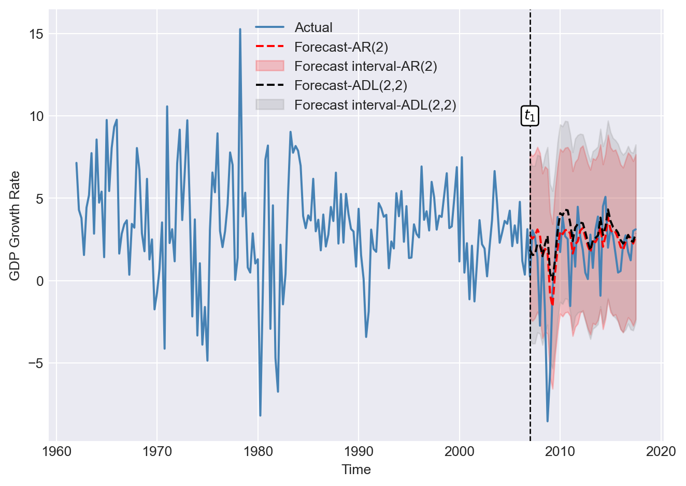
In the next example, we consider the ADL(\(4,4\)) model in Equation 24.12 for the change in inflation. We set \(t_1\) to 1990:Q1 and \(T\) to 2004:Q4. The estimated values of the RMSFE using the SER, FPE, and POOS methods are presented in Table 24.9. The results show that the FPE estimate is slightly larger than the SER estimate, which is consistent with the formulas given in Equation 24.17 and Equation 24.18. The POOS method provides the smallest estimate of the RMSFE.
# RMSFE estimates for the change in inflation
# Compute the RMSFE using the SER and FPE methods
RMSFE_SER = np.sqrt(adl44.mse_resid)
RMSFE_FPE = np.sqrt(((adl44.nobs+8+1)/adl44.nobs)*adl44.mse_resid)
# Index positions for the start and end dates
t1 = np.where(df_subset.index == "1990-01-01")[0][0]
T = np.where(df_subset.index == "2004-10-01")[0][0]
# Preallocate array for savers
savers_adl44 = np.empty((T-t1+1, 2))
# Loop over each time step
for t in range(T - t1 + 1):
end_date0 = df_subset.index[t1 + t]
end_date1 = df_subset.index[t1 + t - 1]
end_date2 = df_subset.index[t1 + t - 2]
end_date3 = df_subset.index[t1 + t - 3]
end_date4 = df_subset.index[t1 + t - 4]
# Prepare the data for the regression model
data_slice = df_subset.loc["1962-01-01":end_date1, :]
# Fit the OLS model
model = smf.ols(formula="Delta_Inf ~ L1_Delta_Inf + L2_Delta_Inf + L3_Delta_Inf + L4_Delta_Inf + L1_u_rate + L2_u_rate + L3_u_rate + L4_u_rate", data=data_slice).fit()
# Get model parameters
params = model.params
# Predict the value
predicted = (params[0] + params[1] * df_subset.loc[end_date1, "Delta_Inf"] +
params[2] * df_subset.loc[end_date2, "Delta_Inf"] +
params[3] * df_subset.loc[end_date3, "Delta_Inf"] +
params[4] * df_subset.loc[end_date4, "Delta_Inf"] +
params[5] * df_subset.loc[end_date1, "L1_u_rate"] +
params[6] * df_subset.loc[end_date2, "L1_u_rate"] +
params[7] * df_subset.loc[end_date3, "L1_u_rate"] +
params[8] * df_subset.loc[end_date4, "L1_u_rate"])
# Calculate the residual (savers)
savers_adl44[t,0] = df_subset.loc[end_date0, "Delta_Inf"] - predicted
savers_adl44[t,1] = df_subset.loc[end_date1, "Inf"] + predicted
# Compute RMSFE for the POOS method
RMSFE_POOS = np.sqrt(np.mean(savers_adl44[:,0] ** 2))# Create DataFrame
pd.DataFrame({
'RMSFE_POOS': [RMSFE_POOS],
'RMSFE_SER': [RMSFE_SER],
'RMSFE_FPE': [RMSFE_FPE]
}).round(3)| RMSFE_POOS | RMSFE_SER | RMSFE_FPE | |
|---|---|---|---|
| 0 | 1.268 | 1.393 | 1.429 |
Finally, we plot the one-step-ahead forecasted values obtained using the POOS method for the ADL(\(4,4\)) model of the change in the inflation rate. In Figure 24.12, we provide the plots of forecasts and the \(95\%\) forecast interval.
# Actual inflation rate and forecasts
# Index positions for the start and end dates
t1 = np.where(df_subset.index == "1990-01-01")[0][0]
T = np.where(df_subset.index == "2004-10-01")[0][0]
# Create a DataFrame to store the forecasts
forecasts = pd.DataFrame({'forecasts': np.nan}, index=pd.date_range(start='1962-01-01', end='2004-10-01', freq='QS'))
# Fill in the forecasts in the DataFrame
forecasts.loc['1990-01-01':'2004-10-01', 'forecasts'] = savers_adl44[:, 1]
# Compute the forecast interval
forecast_interval_POOS = 1.96 * RMSFE_POOS
forecast_interval_SER = 1.96 * RMSFE_SER
forecast_interval_FPE = 1.96 * RMSFE_FPE
# Create a figure and axis
fig, ax = plt.subplots(figsize=(6, 4))
# Plot the actual inflation rate
ax.plot('Inf', data=df_subset, linestyle='-', label='Actual')
# Plot the forecasted inflation rate
ax.plot('forecasts', data=forecasts, color='red', linestyle='-', label='Forecast', linewidth=1)
# Plot the upper and lower bounds of the forecast interval based on POOS
ax.fill_between(forecasts.index, forecasts['forecasts'] - forecast_interval_POOS, forecasts['forecasts'] + forecast_interval_POOS, color='red', alpha=0.2, label='Forecast interval (POOS)')
# Plot the upper and lower bounds of the forecast interval based on SER
# ax.fill_between(forecasts.index, forecasts['forecasts'] - forecast_interval_SER, forecasts['forecasts'] + forecast_interval_SER, color='none', alpha=0.2, label='Forecast interval (SER)')
# Plot the upper and lower bounds of the forecast interval based on FPE
# ax.fill_between(forecasts.index, forecasts['forecasts'] - forecast_interval_FPE, forecasts['forecasts'] + forecast_interval_FPE, color='none', alpha=0.2, label='Forecast interval (FPE)')
# Add a vertical line at the start date
ax.axvline(df_subset.index[t1], color='black', linestyle='--', linewidth=1)
# Add a text label for the start date
ax.text(df_subset.index[t1], 12.5, r"$t_1$",
color="black", fontsize=10,
horizontalalignment="center", verticalalignment="center",
bbox=dict(boxstyle="round", fc="white", ec="black", pad=0.2))
# Set the x and y labels
ax.set(xlabel='time', ylabel='Inflation rate')
# Add a legend
ax.legend(frameon = False, fontsize=8)
# Show the plot
plt.show()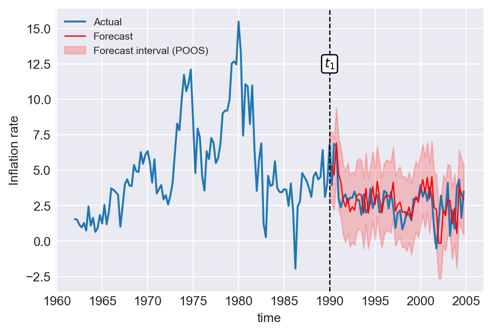
24.11 Nonstationarity
The second assumption given in Section 22.8 requires that the random variables \((Y_t, X_{1t}, \dots, X_{mt})\) are stationary. If this assumption fails, forecasts, hypothesis tests, and confidence intervals become unreliable.
We begin by investigating the necessary and sufficient conditions under which the AR(\(1\)) model is weakly stationary. To this end, consider the following AR(\(1\)) process (with no intercept for simplicity): \[ Y_t = \beta_1 Y_{t-1} + u_t, \]
where \(u_t\)’s are uncorrelated error terms with mean zero and variance \(\sigma^2_u\). Then, by (continuous) backward substitution, we can write \[ \begin{align*} Y_t &= \beta_1 Y_{t-1} + u_t \\ &= \beta_1(\beta_1 Y_{t-2} + u_{t-1}) + u_t=\beta_1^2Y_{t-2}+\beta_1u_{t-1} + u_t\\ &= \beta_1^2(\beta_1 Y_{t-3} + u_{t-2}) +\beta_1u_{t-1} + u_t\\ &=\beta_1^3Y_{t-3}+\beta_1^2u_{t-2}+\beta_1u_{t-1} + u_t\\ &\quad\vdots\\ &=\sum_{j=0}^{\infty}\beta_1^ju_{t-j}. \end{align*} \tag{24.20}\]
Hence, \(Y_t\) is a weighted average of the current and past error terms. To show that \(Y_t\) is weakly stationary, it suffices to demonstrate that the means and the variance-covariance matrix of \((Y_{s+1}, Y_{s+2}, \dots, Y_{s+T})\) do not depend on \(s\).
For simplicity, assume that \(T=2\). Hence, we need to show that the mean, variance, and covariance of \((Y_{s+1},Y_{s+2})\) do not depend on \(s\). Using Equation 24.20, we have \[ \text{E}(Y_t)=\text{E}\left(\sum_{j=0}^{\infty}\beta_1^ju_{t-j}\right)=\sum_{j=0}^{\infty}\beta_1^j\text{E}(u_{t-j})=0. \tag{24.21}\]
Assume also that \(|\beta_1|<1\). Then, since \(u_t\) are uncorrelated, we have \[ \begin{align*} \text{var}(Y_t)&=\text{var}\left(\sum_{j=0}^{\infty}\beta_1^ju_{t-j}\right)=\sum_{j=0}^{\infty}(\beta_1^j)^2\text{var}(u_{t-j})\\ &=\sigma_u^2\sum_{j=0}^{\infty}(\beta_1^j)^2=\frac{\sigma_u^2}{1-\beta_1^2}. \end{align*} \tag{24.22}\]
It follows from Equation 24.21 that \(\text{cov}(Y_{s+1},Y_{s+2})=\text{E}(Y_{s+1}Y_{s+2})\). Then, using \(Y_{s+2}=\beta_1Y_{s+1}+u_{s+2}\), we can determine \(\text{cov}(Y_{s+1},Y_{s+2})\) as follows: \[ \begin{align*} \text{cov}(Y_{s+1},Y_{s+2})&= \text{E}(Y_{s+1}(\beta_1Y_{s+1}+u_{s+2}))\\ &=\beta_1\text{E}(Y_{s+1}^2) + \text{E}(Y_{s+1}u_{s+2})=\beta_1\text{var}(Y_{s+1})\\ &=\beta_1\frac{\sigma_u^2}{1-\beta_1^2}. \end{align*} \tag{24.23}\]
Thus, the mean, variance, and covariance of \((Y_{s+1},Y_{s+2})\) do not depend on \(s\). Hence, \((Y_{s+1},Y_{s+2})\) is stationary if \(|\beta_1|<1\). We can use similar arguments to show that the distribution of \((Y_{s+1},Y_{s+2},\dots, Y_{s+T})\) does not depend on \(s\) when \(T>2\).
If stationarity does not hold, the series is said to be nonstationary. Nonstationarity can arise from two frequently encountered reasons: (i) trends (deterministic or stochastic) and (ii) structural breaks.
24.11.1 Trends
A persistent long-term movement in a time series is called a trend. The trend can be deterministic or stochastic. A deterministic trend is nonrandom, and is a deterministic function of time, e.g., \(Y_t = \alpha_0+\alpha_1 t\) or \(Y_t = \alpha_0+\alpha_1 t^2\), where \(\alpha_0\) and \(\alpha_1\) are coefficients. A stochastic trend is random, and varies over time. An important example of a stochastic trend is the following specific case of AR(\(1\)) model: \[ \begin{align*} Y_t &= Y_{t-1} + u_t, \end{align*} \]
where \(u_t\) are uncorrelated error terms with \(\E(u_t|Y_{t-1},Y_{t-2},\ldots)=0\). This model is called the random-walk model (without a drift). It simply indicates that the value of \(Y\) tomorrow is the value of \(Y\) today plus an unpredictable error. There are two key features of the random walk model:
\(\E(Y_t|Y_{t-1},Y_{t-2},\ldots)=Y_{t-1}\) because \(\E(u_t|Y_{t-1},Y_{t-2},\ldots)=0\). Thus, the best prediction of the value of \(Y\) in the future is the value of \(Y\) today: \(Y_{T+h|T}=Y_T\).
It can be written as \(Y_t=Y_0+\sum_{s=1}^tu_s\). Assuming \(Y_0=0\), it follows that \(\text{var}(Y_t) = t \sigma_u^2\), where \(\sigma_u^2\) is the variance of \(u_t\).
As an example, we consider the following three series: the log of the U.S. real GDP, the U.S. inflation rate, and the dollar/pound exchange return (FX return) rate. The time series plots of these series are given in Figure 24.13. Which series are likely not stationary?
# Three time series: log of U.S. real GDP, U.S. inflation rate and FX return rate
dfMacro['LogGDP'] = np.log(dfMacro['GDPC96'])
dfMacro['Inflation'] = 400*(np.log(dfMacro['CPIAUCSL']) - np.log(dfMacro['CPIAUCSL']. shift(1)))
dfMacro['FXreturn'] = np.log(dfMacro['EXUSUK']) - np.log(dfMacro['EXUSUK']. shift(1))fig, (ax1,ax2,ax3) = plt.subplots(3, 1, figsize = (6,6))
ax1.plot('LogGDP', data = dfMacro)
ax2.plot('Inflation', data = dfMacro)
ax3.plot('FXreturn', data = dfMacro)
ax1.set_ylabel('Log of US real GDP', fontsize = 10)
ax2.set_ylabel('US inflation', fontsize = 10)
ax3.set_ylabel('FX return', fontsize = 10)
plt.show()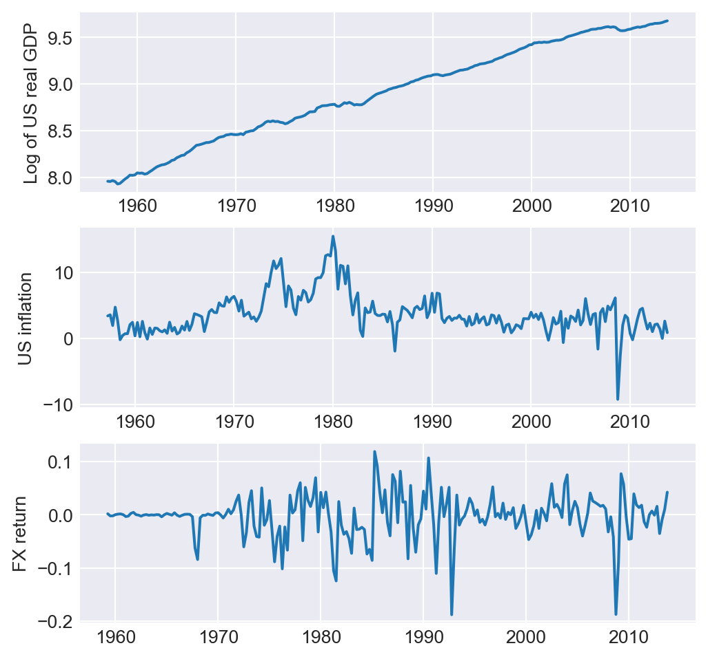
Figure 24.13 shows that the log of the U.S. real GDP exhibits an upward trend. It appears that the log of real GDP fluctuates around a linear trend. The U.S. inflation rate shows long-term swings, with periods of persistently high levels (e.g., the 1970s and early 1980s) and periods of persistently low levels. The inflation rate for the U.S., therefore, is a candidate for having a stochastic trend. On the other hand, the FX returns show no apparent trend. While there are periods of persistently high volatility, this does not constitute a trend. Based on these observations, the log of real GDP and the inflation rate are clearly not stationary, whereas the FX returns appear to be stationary.
Next, to better visualize the behavior of a random-walk process over time, we simulate 8 random-walk processes (without a drift) over 100 periods. Figure 24.14 shows the simulated random-walk processes. We observe that the random walk processes wander up and down and do not revert to a mean.
# Simulate 8 random-walk processes
x_range = np.linspace(0, 100, num=101)
colours = list(mcolors.BASE_COLORS)
fig, ax = plt.subplots(figsize = (7,6))
ax.set(xlim = [0, 100], ylim = [-18, 18])
ax.set(xlabel = 'Time', ylabel = 'Y')
for r in range(0, 8):
eps = sp.stats.norm.rvs(0, 1, 101)
y = np.cumsum(eps)
ax.plot(x_range, y, color = colours[r], linestyle = '-', alpha = 1)
ax.axhline(0, linestyle = '--', color = 'black')
plt.show()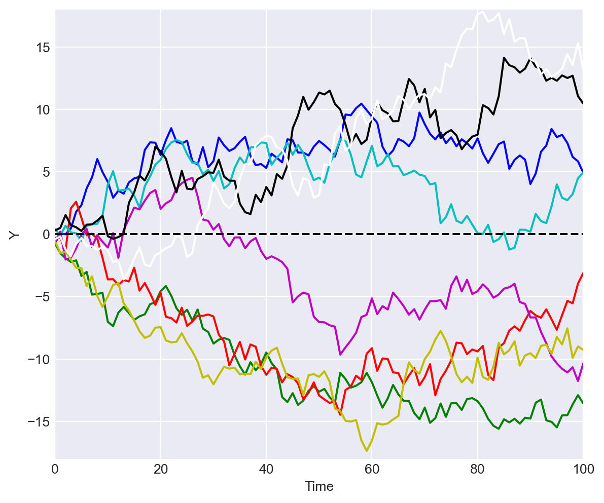
Another example for a time seris with a stochastic trend is a random-walk with drift, \[ Y_t = \beta_0 + Y_{t-1} + u_t \]
where \(u_t\) are uncorrelated error terms with mean zero and variance \(\sigma_u^2\), and \(\beta_0\) is the drift term. We can alternatively express the random walk with drift process as \(Y_t=Y_0+\beta_0 t+\sum_{s=1}^tu_s\), which is derived from backward substitution. Thus, if \(\beta_0 \ne 0\), then \(Y\) follows a random walk around a linear trend. It can also be shown that the \(h\)-step ahead forecast at period \(T\) is \[ Y_{T+h|T} = \beta_0 h + Y_{T}. \]
To visualize how a random-walk process with drift evolves over time, we next simulate 8 random-walk processes with a drift for 100 periods. Figure 24.15 shows the simulated random-walk with drift processes. The black dashed line represents the linear trend \(Y_t=\beta_0t\) around which the random-walk processes fluctuate.
beta = 0.45 # drift term
x_range = np.linspace(0, 100, num=101)
colours = list(mcolors.BASE_COLORS)
fig, ax = plt.subplots(1, 1, figsize = (6,4))
ax.set(xlim = [0, 100], ylim = [-1, 60])
ax.set(xlabel = 'time', ylabel = 'Y')
for r in range(0, 8):
eps = sp.stats.norm.rvs(0, 1, 101)# or np.random.randn(51)
y = beta*np.arange(0,101,1) + np.cumsum(eps)
ax.plot(x_range, y, color = colours[r], linestyle = '-', alpha = .5)
ax.plot(x_range, beta*np.arange(0,101,1), linestyle = '--', color = 'black')
plt.show()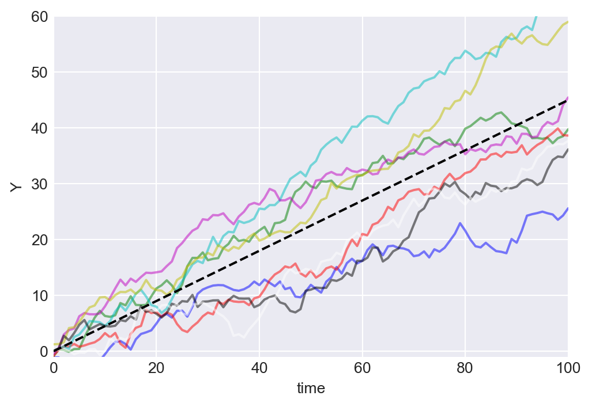
24.11.2 Unit-root processes
When \(Y\) has a stochastic trend, it is often said that \(Y\) has a unit root. To understand where this terminology comes from, we first need to define the lag operator and lag polynomials formally. Let \(L\) denote the lag operator, defined by \(LY_t = Y_{t-1}\) and, more generally, by \(L^j Y_t = Y_{t-j}\) for \(j \geq 1\), where \(j \in \mathbb{N}\). The lag operator allows us to define the lag polynomial as \[ a(L) = a_0 + a_1L + a_2L^2 + \cdots + a_pL^p = \sum_{j=0}^p a_j L^j, \]
where \(a_0,a_1,\dots,a_p\) are the coefficients of the lag polynomial and \(L^0=1\). The degree of the lag polynomial \(a(L)\) is \(p\).
Pre-multiplying \(Y_t\) with \(a(L)\) yields \[ \begin{align*} a(L)Y_t &= \left(\sum_{j=0}^p a_j L^j\right)Y_t = \sum_{j=0}^p a_j L^jY_t = \sum_{j=0}^p a_j Y_{t-j}\\ &=a_0Y_t+a_1Y_{t-1}+\cdots+a_pY_{t-p}. \end{align*} \]
Hence, the AR(\(p\)) model can be written as \[ a(L)Y_t = \beta_0 + u_t, \]
where \(a_0=1\) and \(a_j = -\beta_j\) for \(j=1,2,\dots, p\). Similarly, the ADL(\(p,q\)) model can be written as \[ a(L)Y_t = \beta_0 + b(L)X_{t-1} + u_t, \]
where \(a(L)\) and \(b(L)\) are lag polynomials of order \(p\) and \(q-1\), respectively.
The unit root terminology stems from the roots of the lag polynomial. Consider the AR(\(1\)) model: \[ (1 - \beta_1 L)Y_t = \beta_0 + u_t. \] Here, \(a(L)=1-\beta L\). Let \(z\) be the root of \(a(L)\), i.e., \(a(z)=0\). Then, we necessarily have \[ 1 - \beta_1 z = 0, \]
which implies that \(z=1/\beta_1\). When \(\beta_1=1\), we have \(z=1\), and the process is said to have a unit root (it is a random walk with drift in this case).
We can generalize this argument to the AR(\(p\)) model, where the roots of the polynomial solves \[ 1 - \beta_1 z - \beta_2 z^2 - \beta_3 z^3 - \cdots - \beta_p z^p = 0. \]
For the AR(\(p\)) model to be stationary, the roots of this polynomial must all be greater than \(1\) in absolute value (lie outside the unit circle). For example, the stationarity condition for the AR(\(1\)) model was \(|\beta_1|<1\), which implies that \(|z|>1\).
In the AR(\(1\)) model, if \(Y\) has a unit root, then its first difference becomes stationary because \(\Delta Y_t = Y_t - Y_{t-1} = (1 - \beta_1 L)Y_t = \beta_0+u_t\). Hence, the first difference of a unit-root process is stationary. This is the reason why we often take first differences of nonstationary series to make them stationary.
24.11.3 Problems caused by stochastic trends
Recall that the OLS estimator requires that the random variables \((Y_t, X_{1t}, \dots, X_{mt})\) are stationary. If the series have a stochastic trend, the OLS estimator can be misleading. Morveover, the t-statistic does not have the standard normal distribution even in large samples. If \(Y\) and \(X\) are independent unit-root processes, they can look related in regressions, a phenomenon known as spurious regressions.
In the next example, we simulate a random walk process and estimate an AR(\(1\)) model using the OLS estimator. We repeat this simulation 1,000 times for three different sample sizes: 100, 500, and 1,000. In each simulation, we estimate the AR(\(1\)) model and record the estimate of the AR(\(1\)) coefficient, bias, and the t-statistic for testing the null hypothesis that the AR(\(1\)) coefficient is zero.
In Table 24.10, we present the average coefficient estimate, average bias, and average t-statistic for each sample size. The simulation results show that the OLS estimator exhibits a negative bias, and the magnitude of this bias decreases as the sample size increases. Also, the average t-statistic increases as the sample size grows. Figure 24.16 shows histograms of the estimates and t-statistics. These histograms indicate that the finite-sample distribution of the OLS estimator is left-skewed, while that of the t-statistic is right-skewed. Both finite sample distributions deviate from normality. Therefore, inference based on the standard normal distribution is not valid in the presence of a stochastic trend even when the sample size is large.
# Simulation to show the effect of nonstationarity on the OLS estimator
# Function to simulate random walk and estimate AR(1) model
def simulate_ar1(n, n_simulations):
estimates = []
biases = []
np.random.seed(42)
t_stats = []
for _ in range(n_simulations):
# Generate random walk
e = np.random.normal(0, 1, n)
y = np.cumsum(e)
# Estimate AR(1) model
y_lag = np.roll(y, 1)
y_lag[0] = 0 # Set the first lagged value to 0
X = sm.add_constant(y_lag)
model = sm.OLS(y, X).fit()
# Record the estimate, bias, and t-statistic
estimate = model.params[1]
bias = estimate - 1 # True value of beta is 1 in random walk
t_stat = model.tvalues[1]
estimates.append(estimate)
biases.append(bias)
t_stats.append(t_stat)
return np.array(estimates), np.array(biases), np.array(t_stats)
# Parameters
sample_sizes = [100, 500, 1000]
n_simulations = 1000
# DataFrame to store results
results = pd.DataFrame(columns=['Sample Size', 'Mean Estimate', 'Mean Bias', 'Mean t-Statistic'])
# Run simulations for each sample size
for n in sample_sizes:
estimates, biases, t_stats = simulate_ar1(n, n_simulations)
new_row = pd.DataFrame([{
'Sample Size': n,
'Mean Estimate': np.mean(estimates),
'Mean Bias': np.mean(biases),
'Mean t-Statistic': np.mean(t_stats)
}])
results = pd.concat([results, new_row], ignore_index=True)# Simulation results
results.round(3)| Sample Size | Mean Estimate | Mean Bias | Mean t-Statistic | |
|---|---|---|---|---|
| 0 | 100 | 0.949 | -0.051 | 37.636 |
| 1 | 500 | 0.989 | -0.011 | 187.071 |
| 2 | 1000 | 0.995 | -0.005 | 376.630 |
# Plot histograms for estimates and t-statistics
fig, axes = plt.subplots(3, 2, figsize=(8, 6))
for i, n in enumerate(sample_sizes):
estimates, biases, t_stats = simulate_ar1(n, n_simulations)
axes[i, 0].hist(estimates, bins=30, color='steelblue', edgecolor='black')
axes[i, 0].set_title(f'Sample size: {n}', fontsize=10)
axes[i, 0].set_xlabel('Estimate', fontsize=10)
axes[i, 0].set_ylabel('Frequency', fontsize=10)
axes[i, 1].hist(t_stats, bins=30, color='lightcoral', edgecolor='black')
axes[i, 1].set_title(f'Sample size: {n}', fontsize=10)
axes[i, 1].set_xlabel('t-Statistic', fontsize=10)
axes[i, 1].set_ylabel('Frequency', fontsize=10)
plt.tight_layout()
plt.show()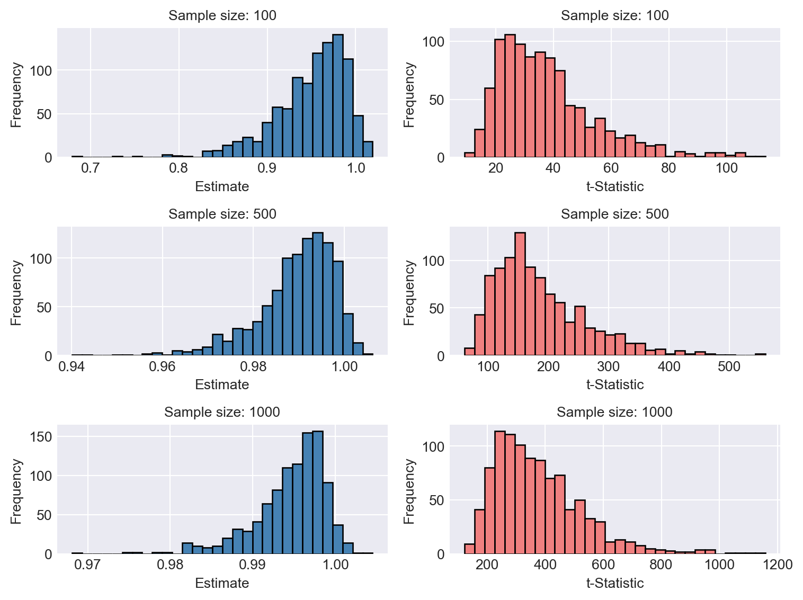
In the next example, we use a simulation study to illustrate the spurious regression phenomenon. We generate \(Y\) and \(X\) from independent random walk with drift processes and estimate the following regression model: \(Y_t=\beta_0+\beta_1X_t+u_t\). We repeat this simulation 1,000 times for three different sample sizes: 100, 500, and 1,000. In each simulation, we estimate the regression model and record the slope coefficient estimate, bias, and the \(t\)-statistic for testing the null hypothesis that the slope coefficient is zero.
The simulation results are presented in Table 24.11. The OLS estimator reports large positive bias, and the bias does not decrease as the sample size increases. The \(t\)-statistics are also large, indicating a statistically significant relationship between \(Y\) and \(X\). Figure 24.17 shows histograms of the estimates and t-statistics.
# Simulation to show the spurious regression phenomenon
# Function to simulate two independent random walks and estimate a regression model
def simulate_spurious_regression(n, n_simulations):
estimates = []
biases = []
np.random.seed(42)
t_stats = []
for _ in range(n_simulations):
# Generate two independent random walks
e1 = np.random.normal(0, 1, n)
y1 = np.cumsum(e1)+ 0.2 * np.arange(n)
e2 = np.random.normal(0, 1, n)
y2 = np.cumsum(e2) + 0.5 * np.arange(n)
# Estimate regression model
X = sm.add_constant(y2)
model = sm.OLS(y1, X).fit()
# Record the estimate, bias, and t-statistic
estimate = model.params[1]
bias = estimate
t_stat = model.tvalues[1]
estimates.append(estimate)
biases.append(bias)
t_stats.append(t_stat)
return np.array(estimates), np.array(biases), np.array(t_stats)
# Parameters
sample_sizes = [100, 500, 1000]
n_simulations = 1000
# DataFrame to store results
results = pd.DataFrame(columns=['Sample Size', 'Mean Estimate', 'Mean Bias', 'Mean t-Statistic'])
# Run simulations for each sample size
for n in sample_sizes:
estimates, biases, t_stats = simulate_spurious_regression(n, n_simulations)
new_row = pd.DataFrame([{
'Sample Size': n,
'Mean Estimate': np.mean(estimates),
'Mean Bias': np.mean(biases),
'Mean t-Statistic': np.mean(t_stats)
}])
results = pd.concat([results, new_row], ignore_index=True)# Simulation results
results.round(3)| Sample Size | Mean Estimate | Mean Bias | Mean t-Statistic | |
|---|---|---|---|---|
| 0 | 100 | 0.415 | 0.415 | 21.650 |
| 1 | 500 | 0.398 | 0.398 | 112.982 |
| 2 | 1000 | 0.403 | 0.403 | 237.647 |
# Plot histograms for estimates and t-statistics
fig, axes = plt.subplots(3, 2, figsize=(8, 6))
for i, n in enumerate(sample_sizes):
estimates, biases, t_stats = simulate_spurious_regression(n, n_simulations)
axes[i, 0].hist(estimates, bins=30, color='steelblue', edgecolor='black')
axes[i, 0].set_title(f'Sample size: {n}', fontsize=10)
axes[i, 0].set_xlabel('Estimate', fontsize=10)
axes[i, 0].set_ylabel('Frequency', fontsize=10)
axes[i, 1].hist(t_stats, bins=30, color='lightcoral', edgecolor='black')
axes[i, 1].set_title(f'Sample size: {n}', fontsize=10)
axes[i, 1].set_xlabel('t-Statistic', fontsize=10)
axes[i, 1].set_ylabel('Frequency', fontsize=10)
plt.tight_layout()
plt.show()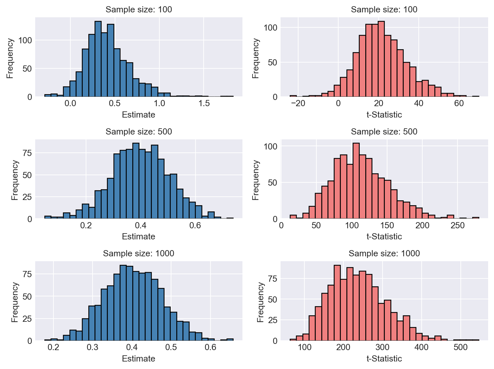
24.11.4 How to detect stochastic trends?
The plot of time series data may help detecting a stochastic trend. We may look for persistent long-run movements. We can also use a regression-based test for a stochastic trend, e.g., the augmented Dickey-Fuller test.
Consider the following AR(\(1\)) process: \(Y_t = \beta_0 + \beta_1Y_{t-1} + u_t\). Subtracting \(Y_{t-1}\) from both sides, we obtain \[ \Delta Y_t = \beta_0 + \delta Y_{t-1} + u_t, \tag{24.24}\] where \(\delta = \beta_1 - 1\). If \(Y_t\) indeed has a unit root, that is \(\beta_1=1\), then \(\delta = 0\). Therefore, the null hypothesis for the Dickey-Fuller test is \(H_0:\delta = 0\) (random walk), and the alternative is \(H_1:\delta < 0\) (stationarity). Hence, the Dickey-Fuller test is a one-sided test.
Now, consider the AR(2) process: \(Y_t = \beta_0 + \beta_1Y_{t-1} + \beta_2Y_{t-2} + u_t\). We can rewrite this process as \[ \begin{align*} Y_t &= \beta_0 + \beta_1Y_{t-1} +\beta_2Y_{t-2} + u_t\\ &= \beta_0 + \beta_1Y_{t-1} +\beta_2Y_{t-1} -\beta_2Y_{t-1} +\beta_2Y_{t-2} + u_t\\ &=\beta_0+(\beta_1+\beta_2)Y_{t-1}-\beta_2(Y_{t-1} - Y_{t-2}) + u_t \end{align*} \]
Subtracting \(Y_{t-1}\) from both sides, we obtain \[ \begin{align*} \Delta Y_t &= \beta_0 + (\beta_1+\beta_2-1)Y_{t-1} - \beta_2\Delta Y_{t-1} + u_t\\ &=\beta_0 + \delta Y_{t-1} + \gamma_1 \Delta Y_{t-1} + u_t, \end{align*} \tag{24.25}\] where \(\delta=\beta_1+\beta_2-1\) and \(\gamma_1 = -\beta_2\). Also, note that the AR(\(2\)) model can be written as \[ (1 - \beta_1 L -\beta_2L^2)Y_t = \beta_0 + u_t. \]
Denote the roots of the lag polynomial with \(z\). Then, necessarily, we have \[ 1 - \beta_1 z -\beta_2z^2 = 0. \]
Clearly, if one of the roots is unity, then \(\beta_1+\beta_2=1\). In that case \(\delta = 0\), and the AR(\(2\)) process becomes \[ \Delta Y_t = \beta_0 + \gamma \Delta Y_{t-1} + u_t. \]
Hence, if an AR(\(2\)) process has a unit root, it can be written as an AR(\(1\)) process in the first differences. For testing stationarity in the AR(\(2\)) model, the null hypothesis for the Dickey-Fuller test is \(H_0:\delta = 0\) (unit root), and the alternative is \(H_1:\delta < 0\) (stationary).
Using similar arguments, the discussion can be generalized to AR(\(p\)) processes: \[ \Delta Y_t = \beta_0 + \delta Y_{t-1} + \gamma_1 \Delta Y_{t-1} + \gamma_2 \Delta Y_{t-2} + \cdots + \gamma_{p-1}\Delta Y_{t-p+1}+ u_t, \tag{24.26}\]
where \(\delta = \beta_1 + \beta_2 +\cdots+\beta_p -1\), \(\gamma_1 = -(\beta_2 +\beta_3+\cdots+\beta_p)\), \(\gamma_2 = -(\beta_3 +\beta_4+\cdots+\beta_p)\) and so on, with \(\gamma_{p-1} = -\beta_p\). Also, in this case, the null hypothesis is \(H_0:\delta = 0\) (unit root), and the alternative is \(H_1:\delta < 0\) (stationary).
The Dickey-Fuller test statistic is simply the OLS \(t\)-statistic for testing \(H_0:\delta = 0\). In particular, the t-statistic for testing \(H_0:\delta = 0\) in Equation 24.26 is called the augmented Dickey-Fuller (ADF) statistic.
Under the alternative hypothesis, we assume that the series is stationary. For the time series that have a time trend, it is more appropriate to assume that the series is stationary around a deterministic trend. In this case, the model is augmented with a time trend: \[ \Delta Y_t = \beta_0+ \alpha t + \delta Y_{t-1} + \gamma_1 \Delta Y_{t-1} + \gamma_2 \Delta Y_{t-2} + \cdots + \gamma_{p-1}\Delta Y_{t-p+1} + u_t, \tag{24.27}\]
where \(\alpha\) is the coefficient of the time trend. In this case, the null hypothesis is \(H_0:\delta = 0\) (unit root), and the alternative is \(H_1:\delta < 0\) (stationary around a deterministic time trend). The augmented Dickey-Fuller test statistic for testing \(H_0:\delta = 0\) in Equation 24.27 is again the OLS t-statistic.
In practice, we use either Equation 24.26 or Equation 24.27, depending on whether we suspect a deterministic trend in the series. In either case, the lag length \(𝑝\) is selected based on information criteria. The econometric literature suggests that including too many lags is preferable to including too few. Therefore, it is recommended to use the AIC rather than the BIC when estimating \(p\) for the ADF statistic. In conducting the test, we cannot resort to the critical values obtained from the standard normal distribution even in large samples. The reason is that under \(H_0\), the augmented Dickey-Fuller statistic is not normally distributed. See Chapter 16 in Hansen (2022) for the distribution of the the Dickey-Fuller test. We need to resort to simulation methods to determine the critical values from the finite sample distribution of the t-statistic.
Since the null distribution of the Dickey-Fuller test is not standard normal, even in large samples, the critical values must be obtained through simulation methods. To this end, we can use statsmodels.tsa.stattools.adfuller() to implement the test and tabulate the critical values using a simulation study. In the following example, we simulate a random walk process and estimate the ADF statistic. We repeat this simulation 1,000 times for each model and calculate the critical values at the 1%, 5%, and 10% significance levels. The simulation results are presented in Table 24.12. The histograms of the ADF statistics are shown in Figure 24.18. Note that these critical values are obtained from the finite sample distribution of the ADF statistic. They are substantially different from the critical values obtained from the standard normal distribution.
# Function to simulate a random walk
def simulate_random_walk(n):
# Generate random walk with intercept
x = []
e = np.random.normal(0, 1, n)
for i in range(n):
if i == 0:
x.append(e[i])
else:
x.append(x[i-1] + e[i])
return x
# Function to perform the ADF test and extract the test statistic
def adf_statistic(series, max_lag=1, trend_type='c'):
"""Perform the ADF test and return the test statistic."""
result = stt.adfuller(series, maxlag=max_lag, regression=trend_type, autolag='AIC')
return result[0] # Return the test statistic
# Parameters for simulation
n_simulations = 1000 # Number of simulations
n = 100 # Length of the time series
# Simulation for the intercept only model
adf_stats_intercept_only = []
for i in range(n_simulations):
series = simulate_random_walk(n)
adf_stat = adf_statistic(series, trend_type='c') # 'c' stands for constant (intercept only)
adf_stats_intercept_only.append(adf_stat)
# Simulation for the intercept and trend model
adf_stats_intercept_trend = []
for i in range(n_simulations):
series = simulate_random_walk(n)
adf_stat = adf_statistic(series, trend_type='ct') # 'ct' stands for constant and time trend
adf_stats_intercept_trend.append(adf_stat)
#%% Calculate critical values at 1%, 5%, and 10% significance levels for both models
percentiles_intercept_only = np.percentile(adf_stats_intercept_only, [1, 5, 10])
percentiles_intercept_trend = np.percentile(adf_stats_intercept_trend, [1, 5, 10])# Create a DataFrame for critical values
critical_values_df = pd.DataFrame({
'Significance Level': ['1%', '5%', '10%'],
'Intercept Only': percentiles_intercept_only,
'Intercept and Trend': percentiles_intercept_trend
})
# Display the DataFrame without the row index
critical_values_df.round(2)| Significance Level | Intercept Only | Intercept and Trend | |
|---|---|---|---|
| 0 | 1% | -3.43 | -4.17 |
| 1 | 5% | -2.95 | -3.59 |
| 2 | 10% | -2.58 | -3.21 |
# Plot the distributions of ADF statistics
plt.figure(figsize=(7, 4))
plt.subplot(1, 2, 1)
plt.hist(adf_stats_intercept_only, bins=50, color='steelblue', edgecolor='black')
plt.axvline(percentiles_intercept_only[1], color='r', linestyle='--', label='5% critical value')
plt.axvline(percentiles_intercept_only[0], color='g', linestyle='--', label='1% critical value')
plt.axvline(percentiles_intercept_only[2], color='y', linestyle='--', label='10% critical value')
plt.title("ADF Statistic Distribution - Intercept Only", fontsize=10)
plt.xlabel("ADF Statistic", fontsize=10)
plt.ylabel("Frequency", fontsize=10)
plt.legend()
plt.subplot(1, 2, 2)
plt.hist(adf_stats_intercept_trend, bins=50, color='lightcoral', edgecolor='black')
plt.axvline(percentiles_intercept_trend[1], color='r', linestyle='--', label='5% critical value')
plt.axvline(percentiles_intercept_trend[0], color='g', linestyle='--', label='1% critical value')
plt.axvline(percentiles_intercept_trend[2], color='y', linestyle='--', label='10% critical value')
plt.title("ADF Statistic Distribution - Intercept and Trend", fontsize=10)
plt.xlabel("ADF Statistic", fontsize=10)
plt.ylabel("Frequency", fontsize=10)
plt.legend()
plt.tight_layout()
plt.show()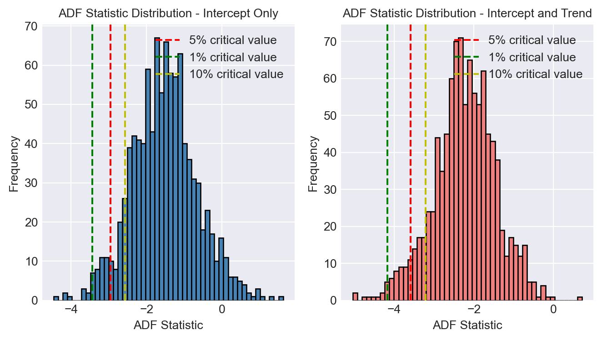
In the next example, we will implement the Dickey-Fuller test for a unit root in the log of the U.S. GDP. We use the statsmodels.tsa.stattools.adfuller() function to estimate the ADF statistic. Since the log GDP has an upward trend, we include a time trend in the regression. The null hypothesis is that the log GDP has a unit root, and the alternative hypothesis is that the log GDP is stationary around a deterministic trend. The function reports the ADF statistic, the p-value, and the critical values at the 1%, 5%, and 10% significance levels. The ADF test statistic is -2.04, and the p-value is 0.58. The critical values at the 1%, 5%, and 10% significance levels are -3.99, -3.42, and -3.14, respectively. Since the ADF statistic is greater than the critical value at the 5% significance level, we fail to reject the null hypothesis of a unit root in the log GDP series.
adf_gdp = stt.adfuller(dfGrowth['Y'], maxlag = 4, regression = 'ct')
print(adf_gdp)(-2.0369650291910415, 0.5811622506337362, 2, 229, {'1%': -3.998856453913814, '5%': -3.429838138665128, '10%': -3.138417539315758}, -1578.1680892958107)In the next example, we use the Dickey-Fuller test for testing a unit root in the U.S. inflation series. In the stt.adfuller function call, we set maxlag=4 to include four lags in the regression. The regression type is set to 'c' to include a constant in the regression. The p-value from the Dickey-Fuller test is approximately 7.5%. Therefore, at the 5% significance level, we fail to reject the null hypothesis of a unit root in the U.S. inflation series.
stt.adfuller(df_subset['Inf'], maxlag = 4, regression = 'c')(-2.6972643365433013,
0.07451285581907452,
3,
168,
{'1%': -3.4698858990744115,
'5%': -2.8789026251889647,
'10%': -2.5760266680839004},
620.4545345599931)24.11.5 Structural Breaks
The second type of nonstationarity we consider is that the coefficients of the model might not be constant over the full sample. Clearly, this poses a serious problem for forecasting. We consider a testing approach to detect changes in the coefficients. There are two testing approaches:
- A test for a known break date, and
- A test for an unknown break date.
24.11.6 Test for a known break date
Suppose the break is known to have occurred at date \(\tau\). Then, the stability of the model can be tested by a fully interacted regression model. For example, consider the ADL(\(1,1\)) model and let \(D_t(\tau)\) be the dummy variable for the periods after \(\tau\), i.e., \(D_t(\tau) = 0\) if \(t\le\tau\) and \(D_t(\tau) = 1\) if \(t>\tau\). We can estimate the following fully interacted regression ADL(\(1,1\)) specification \[ Y_t = \beta_0 + \beta_1Y_{t-1} + \delta X_{t-1} + \gamma_0D_t(\tau) + \gamma_1 D_t(\tau)Y_{t-1} +\gamma_2D_t(\tau)X_{t-1} + u_t. \]
We can test for the joint significance of the interaction terms, i.e., \(H_0:\gamma_0 = \gamma_1 =\gamma_2 =0\). If we reject \(H_0\), then there is statistical evidence for a change at \(\tau\). We can compute a heteroskedasticity robust \(F\)-statistic to test this null. This approach is often called the Chow test.
The Chow test is restrictive because it requires the break date \(\tau\) to be known. Ideally, we would like to test the null hypothesis of coefficient stability against the general alternative that the coefficients are not stable.
24.11.7 Test for an unknown break date
To test for an unknown break date, we can use the Quandt Likelihood Ratio (QLR) statistic (also called the sup-Wald statistic). The QLR test is indeed the maximum of several Chow test statistics. Let \(F(\tau)\) denote the Chow test statistic for testing a break at \(\tau\). Then, the QLR test statistic is the maximum of all Chow statistics over \(\tau_0\le\tau\le\tau_1\), \[ QLR = \max \left\{F(\tau_0),F(\tau_0+1),\dots,F(\tau_1-1),F(\tau_1)\right\}. \]
A conventional choice for \(\tau_0\) and \(\tau_1\) are the \(0.15\)th and \(0.85\)th quantiles of the sample data, i.e., use the inner \(70\%\) of the data for a possible break point. The large sample distribution of the QLR test is not standard. For details, see Chapter 15 in Stock and Watson (2020). Therefore, the critical values must be tabulated through simulation methods.
In the following example, we consider the ADL(\(2,2\)) model for the U.S. GDP growth rate given in Equation 24.11. We want to test whether there is a break in the coefficients of TSpread. Specifically, we want to test whether the intercept term and the coefficients on the lags of TSpread are constant over the full sample. For each possible break date, we estimate the following regression model: \[
\begin{align*}
\text{GDPGR}_t& = \beta_0 + \beta_1\text{GDPGR}_{t-1} + \beta_2\text{GDPGR}_{t-2} + \delta_1\text{TSpread}_{t-1} + \delta_2\text{TSpread}_{t-2}\\
& + \gamma_0D_t(\tau) + \gamma_1 D_t(\tau)\text{TSpread}_{t-1} + \gamma_2 D_t(\tau)\text{TSpread}_{t-2} + u_t.
\end{align*}
\]
where \(D_t(\tau)\) is a dummy variable for the periods after \(\tau\). We then test \(H_0:\gamma_0 = \gamma_1 =\gamma_2=0\). In the following code chunk, the break date is allowed to vary between 1970:Q1 and 2005:Q4. For each break date, we estimate the regression model, compute the Chow test statistic using the f_test() method of the fitted model, and store the result in the savers array.
# Computing the QLR test for a break in the coefficients of the term spread
break_tau = pd.date_range(start = '1970-01-01', end = '2005-10-01', freq = 'QS')
savers = np.empty(len(break_tau))
mydata = pd.merge(dfGrowth, dfTermSpread, left_index=True, right_index=True)
mydata = mydata.loc['1962-01-01':'2017-10-01', ['YGROWTH', 'RSPREAD']]
mydata = mydata.dropna()
# Create lagged variables for ADL(2,2)
mydata['Ylag1'] = mydata['YGROWTH'].shift(1)
mydata['Ylag2'] = mydata['YGROWTH'].shift(2)
mydata['RSpread_lag1'] = mydata['RSPREAD'].shift(1)
mydata['RSpread_lag2'] = mydata['RSPREAD'].shift(2)
for i in range(len(break_tau)):
mydata['D'] = (mydata.index > break_tau[i]).astype(int)
adl22_model = smf.ols(formula='YGROWTH ~ Ylag1 + Ylag2 + RSpread_lag1 + RSpread_lag2 + D + D:RSpread_lag1 + D:RSpread_lag2', data=mydata).fit(cov_type='HC1')
hypotheses = ['D=0','D:RSpread_lag1=0', 'D:RSpread_lag2=0']
ftest = adl22_model.f_test(hypotheses)
savers[i] = ftest.statistic
# Find the maximal F-statistic
print(f"The QLR test statistic: {max(savers).round(2)}")
# Find the break date
print(f"The break date: {break_tau[np.argmax(savers)]}")The QLR test statistic: 6.39
The break date: 1980-10-01 00:00:00The QLR test statistic is 6.39, and the break date is 1980:Q4. The critical value for the QLR test statistic is 6.02 at the 1% significance level (see Table 15.5 in Stock and Watson (2020)). Therefore, we reject the null hypothesis that the coefficients are stable at the 1% significance level.
In Figure 24.19, we plot all F-statistic values. The horizontal dashed lines represents the critical values for the QLR test statistic at the 1% and 5% significance levels.
# Plot the F-statistic values for a break in the coefficients of the term spread
supWald = pd.DataFrame(savers, index = break_tau, columns=['savers'])
fig, ax = plt.subplots(figsize=(6, 4))
ax.plot('savers', data=supWald, linestyle='-')
ax.set(ylim=[0, 8])
ax.axhline(max(supWald.savers), 0, (np.argmax(savers) + 1) / len(savers),
linestyle='--', color='black')
ax.axhline(6.02, linestyle='--', color='red', linewidth=0.5)
ax.axhline(4.71, linestyle='--', color='red', linewidth=0.5)
ax.text(np.argmax(savers) / len(savers), max(supWald.savers) + .4, 'QLR statistic = 6.39',
color='k', fontsize=10, ha='left', va='top')
ax.text(0, 6.02, '1% Critical value', color='red', fontsize=8, ha='left', va='top')
ax.text(0, 4.71, '5% Critical value', color='red', fontsize=8, ha='left', va='top')
ax.set(ylabel='F-statistic', xlabel='time')
plt.show()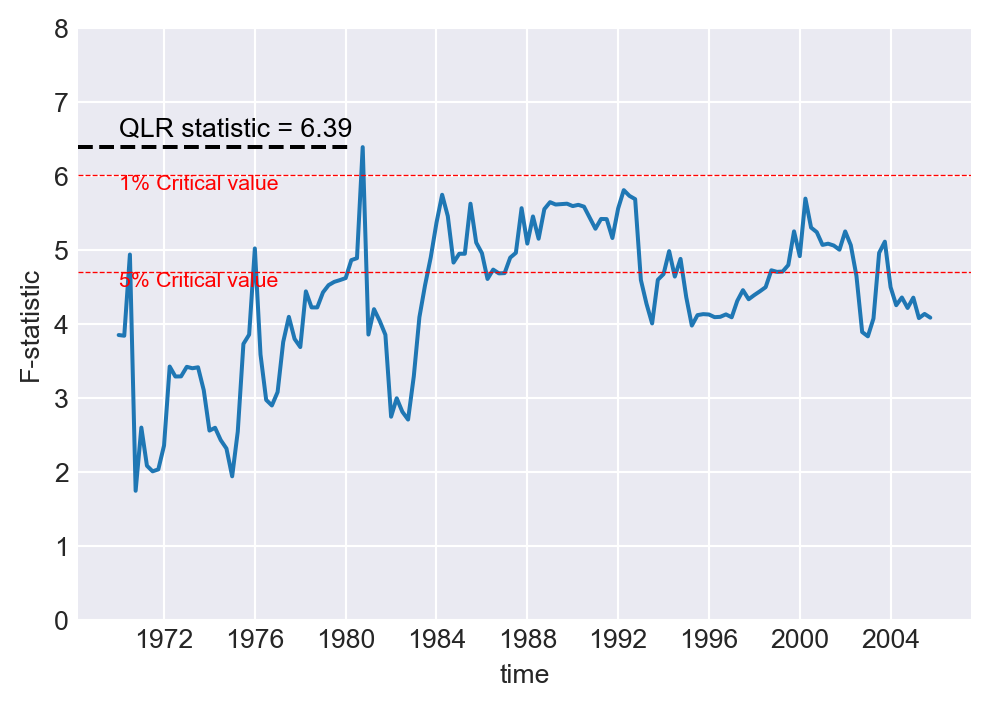
In the next example, we consider the ADL(\(4,4\)) model in Equation 24.12 for the change in the inflation rate. We want to test whether the intercept term and the coefficients on the lags of the unemployment rate are constant over the full sample. For each possible break date, we estimate the following regression model: \[ \begin{align*} \Delta \text{inf}_t &= \beta_0 + \beta_1 \Delta \text{inf}_{t-1} + \cdots + \beta_4 \Delta\text{inf}_{t-4}+ \delta_1 \text{Urate}_{t-1}+\cdots+ \delta_4 \text{Urate}_{t-4}\\ &+ \gamma_0D_t(\tau)+ \gamma_1D_t(\tau) \text{Urate}_{t-1}+\cdots+ \gamma_4D_t(\tau)\text{Urate}_{t-4}+u_t. \end{align*} \]
We compute the Chow test statistic for the null hypothesis \(H_0:\gamma_0 = \gamma_1 =\gamma_2=\gamma_3=\gamma_4=0\) for each possible break date \(\tau\). The break date is allowed to vary between 1970:Q1 and 1997:Q4. For each break date, we estimate the regression model, compute the Chow test statistic using the f_test() method of the fitted model, and store the result in the savers array.
# Computing the QLR test for a break in the coefficients of the unemployment rate
break_tau = pd.date_range(start = '1970-01-01', end = '1997-10-01', freq = 'QS')
savers = np.empty(len(break_tau))
for i in range(len(break_tau)):
df_subset['D'] = (df_subset.index > break_tau[i]).astype(int)
ARDL_44 = smf.ols(formula = 'Delta_Inf ~ L1_Delta_Inf + L2_Delta_Inf + L3_Delta_Inf + L4_Delta_Inf + L1_u_rate + L2_u_rate + L3_u_rate + L4_u_rate +\
D + D:L1_u_rate + D:L2_u_rate + D:L3_u_rate + D:L4_u_rate',
data = df_subset).fit(cov_type='HAC', cov_kwds = {'maxlags':4})
hypotheses = ['D=0','D:L1_u_rate=0', 'D:L2_u_rate=0', 'D:L3_u_rate=0', 'D:L4_u_rate=0']
ftest = ARDL_44.f_test(hypotheses)
savers[i] = ftest.statistic
# Find the maximal F-statistic
print(f"The QLR test statistic: {max(savers).round(2)}")
# Find the break date
print(f"The break date: {break_tau[np.argmax(savers)]}")The QLR test statistic: 6.97
The break date: 1982-01-01 00:00:00The QLR test statistic is 6.97 with the corresponding break date of 1982:Q1. The critical value for the QLR test statistic is 4.53 at the 1% significance level (see Table 15.5 in Stock and Watson (2020)). Therefore, we reject the null hypothesis that the coefficients are stable at the 1% significance level. Figure 24.20 shows the plot of all computed F-statistic values.
# Plot the F-statistic values for a break in the coefficients of the unemployment rate
supWald = pd.DataFrame(savers, index = break_tau, columns=['savers'])
fig, ax = plt.subplots(figsize = (6,4))
ax.plot('savers', data = supWald, linestyle = '-')
ax.set(ylim =[0, 8])
ax.axhline(max(supWald.savers), 0, (np.argmax(savers)+1)/len(savers),
linestyle = '--', color = 'black')
ax.text(np.argmax(savers)/len(savers), max(supWald.savers)+.4, 'QLR statistic = 6.97',
{'color': 'k', 'fontsize': 10, 'ha': 'left', 'va': 'top'})
ax.set(ylabel = 'F-statistic', xlabel = 'time')
plt.show()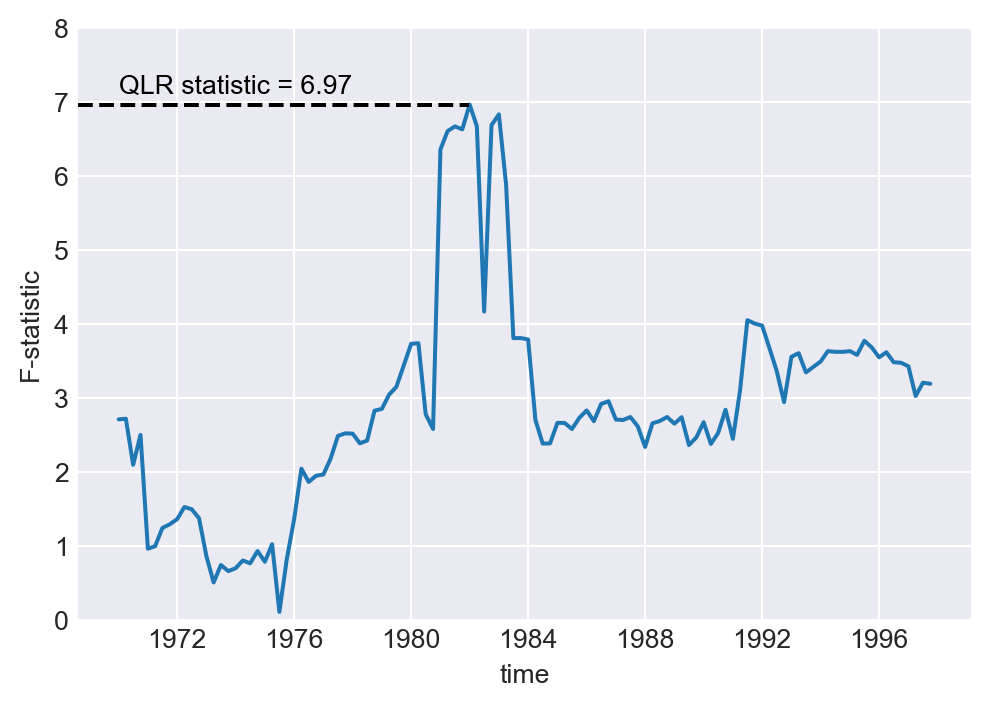
24.11.8 Using pseudo out-of-sample forecast for detecting breaks
We can also use the pseudo out-of-sample forecast to check the stability of the coefficients. To that end, we can plot the in-sample predicted values, the pseudo out-of-sample forecast, and the actual values. If the coefficients are stable, we should not observe any deterioration in the pseduo out-of-sample forecasts. Another way that we can check the stability of the coefficients is to compare the estimates of MSFE\(_\text{POOS}\) and MSFE\(_\text{FPE}\). If the series is stationary, the two estimates should be similar. A large deviation between the estimates of MSFE\(_\text{POOS}\) and MSFE\(_\text{FPE}\) indicates that the coefficients are not stable.
Using the QLR statistic, we show that the intercept and the coefficients on the lags of the term spread in the ADL(\(2,2\)) model for the U.S. growth rate are not stable. The QLR statistic is 6.39, suggesting a break date of 1980:Q4. In the next example, we compute pseudo-out-of-sample forecasts for the U.S. GDP growth rate over the period 2003:Q1–2017:Q3, using an estimation sample from 1981:Q1 to 2002:Q4. The RMSFE estimates are reported in Table 24.13. The RMSFE values based on the SER and FPE methods in this table are computed from the model fitted to the data over the 1981:Q1–2002:Q4 sample period. The RMSFE based on the POOS method is 2.29, which is slightly smaller than the RMSFE based on the FPE method (2.35).
# Prepare the data for the pseudo out-of-sample forecast
mydata = pd.merge(dfGrowth, dfTermSpread, left_index=True, right_index=True)
mydata = mydata.loc['1962-01-01':'2017-10-01', ['YGROWTH', 'RSPREAD']]
# Create lagged variables for ADL(2,2)
mydata['Ylag1'] = mydata['YGROWTH'].shift(1)
mydata['Ylag2'] = mydata['YGROWTH'].shift(2)
mydata['RSpread_lag1'] = mydata['RSPREAD'].shift(1)
mydata['RSpread_lag2'] = mydata['RSPREAD'].shift(2)
mydata = mydata.loc['1981-01-01':'2017-10-01', :]
# Compute RMSFE_SER and RMSFE_FPE
mydata1 = mydata.loc['1981-01-01':'2002-10-01', :]
result = smf.ols(formula='YGROWTH ~ Ylag1 + Ylag2 + RSpread_lag1 + RSpread_lag2',
data=mydata).fit(cov_type='HC1')
RMSFE_SER = np.sqrt(result.mse_resid)
RMSFE_FPE = np.sqrt(((result.nobs+2+1)/result.nobs)*result.mse_resid)
# Compute the pseudo out-of-sample forecasts
# Index positions for the start and end dates
t1 = np.where(mydata.index == "2003-01-01")[0][0]
T = np.where(mydata.index == "2017-10-01")[0][0]
# Preallocate array for savers
savers_adl22 = np.empty((T-t1+1, 2))
# Loop over each time step
for t in range(T - t1 + 1):
end_date0 = mydata.index[t1 + t]
end_date1 = mydata.index[t1 + t - 1]
end_date2 = mydata.index[t1 + t - 2]
# Prepare the data for the regression model
data_slice = mydata.loc["1981-01-01":end_date1, :]
# Fit ADL(2,2) model
model = smf.ols(formula='YGROWTH ~ Ylag1 + Ylag2 + RSpread_lag1 + RSpread_lag2', data=data_slice).fit(vcov_type='HC1')
# Get model parameters
params = model.params
# Predict the value
predicted = (params[0] + params[1] * mydata.loc[end_date1, "YGROWTH"] +
params[2] * mydata.loc[end_date2, "YGROWTH"] +
params[3] * mydata.loc[end_date1, "RSPREAD"] +
params[4] * mydata.loc[end_date2, "RSPREAD"])
# Calculate the forecast errors and forecast
savers_adl22[t,0] = mydata.loc[end_date0, "YGROWTH"] - predicted
savers_adl22[t,1] = predicted
# Compute RMSFE for the POOS method
RMSFE_POOS = np.sqrt(np.mean(savers_adl22[:,0] ** 2))# RMSFE Estimates
# Create DataFrame
pd.DataFrame({
'RMSFE_POOS': [RMSFE_POOS],
'RMSFE_SER': [RMSFE_SER],
'RMSFE_FPE': [RMSFE_FPE]
}).round(2)| RMSFE_POOS | RMSFE_SER | RMSFE_FPE | |
|---|---|---|---|
| 0 | 2.29 | 2.33 | 2.35 |
In Figure 24.21, we plot the actual growth rate, the forecasted growth rate, and the forecast errors. The forecasted growth rate closely tracks the actual U.S. GDP growth rate, except for a single period in 2008:Q4, when the forecast error is notably large.
Based on our results in Table 24.13 and Figure 24.21, we conclude that-aside from the large forecast error in 2008:Q4-the performance of the ADL(\(2,2\)) forecasting model during the pseudo-out-of-sample period (2003:Q1–2017:Q4) is relatively better than its performance during the in-sample period (1981:Q1–2002:Q4).
# Plot of the actual GDP growth rate, the forecasted GDP growth rate, and the forecast errors
# Index positions for the start and end dates
t1 = np.where(mydata.index == "2003-01-01")[0][0]
T = np.where(mydata.index == "2017-10-01")[0][0]
# Create a DataFrame to store the forecasts
forecasts = pd.DataFrame({'forecasts': np.nan}, index=pd.date_range(start='2003-01-01', end='2017-10-01', freq='QS'))
# Fill in the forecasts in the DataFrame
forecasts.loc[:, 'forecasts'] = savers_adl22[:, 1]
forecasts.loc[:, 'forecastsErrors'] = savers_adl22[:, 0]
# Create a figure and axis
fig, ax = plt.subplots(figsize=(6, 4))
# Plot the actual GDP growth rate
ax.plot("YGROWTH", data=mydata.loc["2003-01-01":"2017-10-01", :], linestyle='-', label='Actual growth rate')
# Plot the forecasted GDP growth rate
ax.plot('forecasts', data=forecasts, color='red', linestyle='--', label='Forecast growth rate')
# Plot the upper and lower bounds of the forecast interval
ax.fill_between(forecasts.index, forecasts['forecasts'], mydata.loc["2003-01-01":"2017-10-01", "YGROWTH"], color='steelblue', alpha=0.4, label='Forecast error')
# Add a horizontal dashed line at 0
ax.axhline(0, linestyle='--', color='black', linewidth=1)
# Set the x and y labels
ax.set(xlabel='Date', ylabel='GDP growth rate')
# Add a legend
ax.legend(frameon = False)
# Show the plot
plt.show()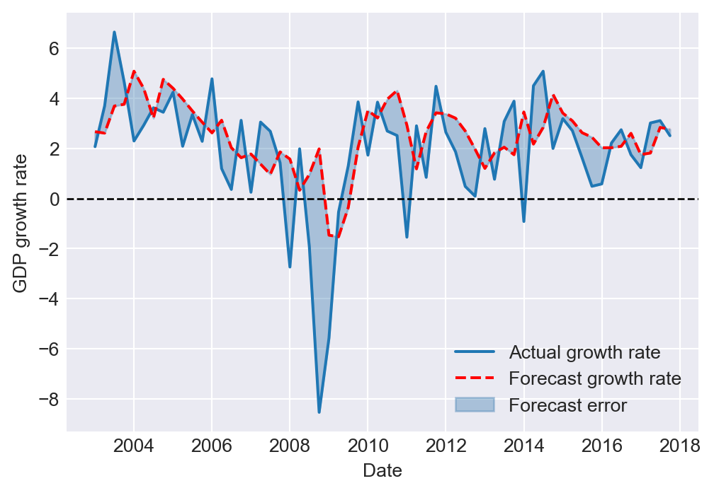
24.11.9 Avoiding the problems caused by breaks
The best way to deal with the problems caused by a break depends on the source of the break. If there is a single break detected by the QLR test, we can simply adjust our regression by including the break dummy variable and the interaction terms between the break dummy variable and the other regressors. If we suspect that all coffecients break, we may also choose using only the post-break data to estimate our regression model.
24.12 ARMA models
We can use the lag polynomials introduced in Section 22.11.2 to extend the AR and ADL models to the autoregressive–moving average (ARMA) model. This type of model also allows for a distributed lag process for the error term. The ARMA(\(p,q\)) model is defined as \[ Y_t = \beta_0 + \beta_1Y_{t-1} + \cdots + \beta_pY_{t-p} + u_t + \theta_1u_{t-1} + \cdots + \theta_qu_{t-q}, \] where \(\beta_1,\beta_2,\ldots,\beta_p\) are the AR coefficients, \(\theta_1,\theta_2,\ldots,\theta_q\) are the moving average (MA) coefficients, and \(u_t\) is an i.i.d. error term with mean zero and variance \(\sigma^2_u\). We can express the ARMA(\(p,q\)) model as \[ \begin{align*} &(1 - \beta_1L - \cdots - \beta_pL^p)Y_t = \beta_0 + (1 + \theta_1L + \cdots + \theta_qL^q)u_t\\ &\implies a(L)Y_t = \beta_0 + b(L)u_t, \end{align*} \] where \(a(L)=(1 - \beta_1L - \cdots - \beta_pL^p)\) and \(b(L)=(1 + \theta_1L + \cdots + \theta_qL^q)\).
According to Stock and Watson (2020), the AR and ARMA models are different ways we use to approximate the autocovariances of \(Y_t\). Indeed, any weakly stationary process can be either written as an AR or MA process. The result that any weakly stationary process can be written in an MA form is known as the Wold decomposition theorem. For the details, see Hamilton (1994) and Hansen (2022).
In Python, the ARMA(\(p,q\)) model can be estimated using the statsmodels.tsa.arima.model.ARIMA() function. The function requires the order of the AR and MA components as input, which can be specified through the order argument.